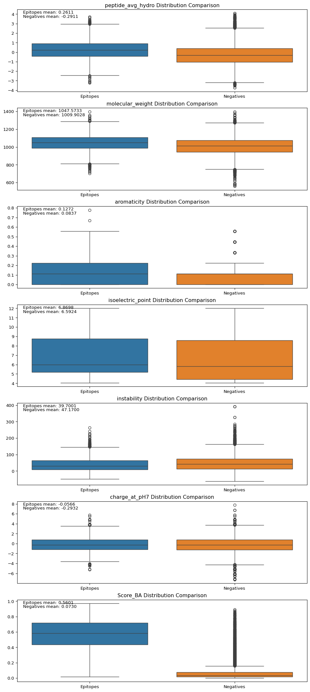
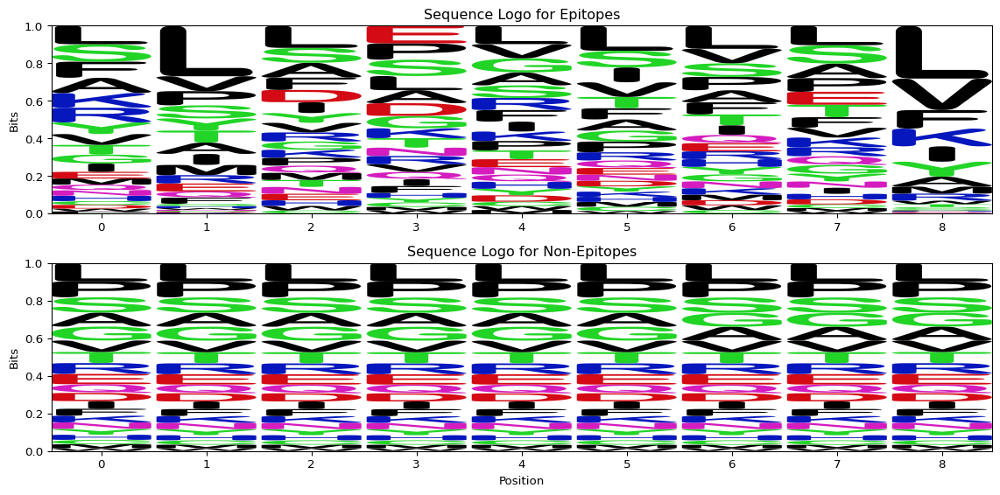
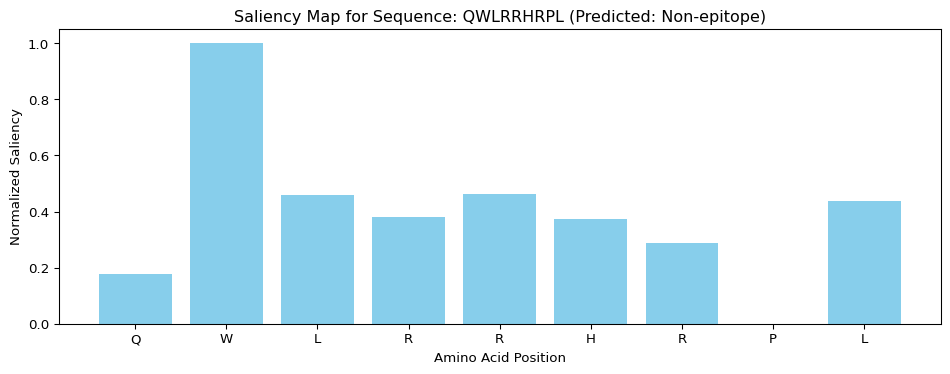

At the heart of immune defense are tiny molecular “flags” called epitopes. These short sequences of amino acids, like “ADVEFCLSL”, sit on larger proteins and tell immune cells whether something is a threat. When an immune cell recognizes an epitope on a virus or a cancer cell, it can launch a protective attack.
Being able to reliably identify these epitopes in creating new vaccines and cancer treatments is crucial. Think of epitopes as the precise handshake between the immune system and a threat. Finding the right ones means smarter therapies can be designed. Unlike older treatments like chemotherapy that harm healthy cells, therapies targeting specific epitopes can attack diseases with more accuracy. This promises better results for patients, with fewer debilitating side effects.
This project is all about teaching computers to do this vital identification work. Machine learning models are being built and tested that can look at an amino acid sequence and its properties and decide if it’s an epitope or not. By making this process faster and more accurate, the discovery of new vaccine and immunotherapy candidates can be sped up, ultimately leading to more effective and kinder treatments.
Data
Dataset
To train these models, the main source is the Immune Epitope Database(IEDB), the largest public library of knowledge about how the immune system sees and reacts to epitopes on different molecules. It tells which sequences are known to be recognized by T-cells or antibodies.
For this project, the focus has been put on epitopes found on human cancer cells that have been proven in experiments to activate T-cell immune defenses. For each epitope, its unique amino acid sequence and the specific immune system molecule (MHC allele) it interacts with will be used.
Importantly, to train a good model, it doesn’t just need to learn what an epitope is; it also needs to learn what it isn’t. Many epitope records in the IEDB link to the full protein they come from. These full proteins are used to carefully select sequences that are not currently known epitopes. This provides a set of “yes” (epitope) and “no” (non-epitope) examples.
Libraries and packages
Code
# Importing librariesimport pandas as pdfrom collections import Counterimport matplotlib.pyplot as pltimport seaborn as snsimport numpy as npimport Biofrom sklearn.ensemble import RandomForestClassifierfrom sklearn.metrics import classification_report, accuracy_score, confusion_matrix, roc_auc_score, roc_curvefrom Bio.SeqUtils.ProtParam import ProteinAnalysisimport requestsfrom io import StringIOfrom Bio import SeqIO
Preprocessing
Retrieving the data from IEDB was as simple as doing a search and clicking export. Using the requests python library, the full antigen sequence was downloaded and appended to the epitope dataset. Next, simple formatting was done to standardize the column names. Finally, the epitope dataset was merged with the assays dataset and filtered to include the following columns:
Code
epitopes = pd.read_csv(r'/Users/tariq/Documents/capstone/data/epitope_table_export_1740279588.csv')assays = pd.read_csv(r'/Users/tariq/Documents/capstone/data/tcell_table_export_1740279970.csv')def fetch_full_sequence(url):if pd.notna(url): # Check if the URL is not NaN url =f'{url}.fasta'try: response = requests.get(url)if response.status_code ==200: fasta_io = StringIO(response.text) records =list(SeqIO.parse(fasta_io, "fasta"))if records: # Check if there are any recordsreturnstr(records[0].seq)else:print("No records found in the FASTA file.")except requests.exceptions.RequestException as e:print(f"Request failed: {e}")returnNone#epitopes['Full Sequence'] = epitopes['Epitope - Molecule Parent IRI'].apply(fetch_full_sequence)epitopes = pd.read_csv(r'/Users/tariq/Documents/capstone/data/epitope_full_seq.csv')# make all column names snake caseepitopes.columns = epitopes.columns.str.lower()assays.columns = assays.columns.str.lower()# remove spaces from column namesepitopes.columns = epitopes.columns.str.replace(' ', '')epitopes.columns = epitopes.columns.str.replace('-', ' ')epitopes.columns = epitopes.columns.str.replace(' ', '_')assays.columns = assays.columns.str.replace(' ', '')assays.columns = assays.columns.str.replace('-', ' ')assays.columns = assays.columns.str.replace(' ', '_')epitopes = epitopes.filter(['epitope_name', 'fullsequence'])assays = assays.filter(['epitope_name', 'epitope_moluculeparent', 'host_name', 'host_mhcpresent', 'assay_method','assay_responsemeasured', 'assay_qualitativemeasurement', 'mhcrestriction_name', 'mhcrestriction_class', 'assayantigen_name'])# map mhc name and class from the assays dataframe to a new column in the epitopes dataframe based on epitope_namemhc = assays.filter(['epitope_name', 'mhcrestriction_name', 'mhcrestriction_class'])mhc = mhc.drop_duplicates(subset=['epitope_name'])epitopes = epitopes.merge(mhc, on='epitope_name', how='left')epitopes.head()
epitope_name
fullsequence
mhcrestriction_name
mhcrestriction_class
0
AAGIGILTV
MPREDAHFIYGYPKKGHGHSYTTAEEAAGIGILTVILGVLLLIGCW...
HLA-A2
I
1
AAGIGILTVI
MPREDAHFIYGYPKKGHGHSYTTAEEAAGIGILTVILGVLLLIGCW...
HLA-A*02:01
I
2
ACDPHSGHFV
NaN
HLA-A2
I
3
ADLVGFLLLK
MSLEQRSLHCKPEEALEAQQEALGLVCVQAATSSSSPLVLGTLEEV...
HLA-A*11:01
I
4
ADVEFCLSL
MLLAVLYCLLWSFQTSAGHFPRACVSSKNLMEKECCPPWSGDRSPC...
HLA-B*44:03
I
MHC Allele Distribution
It’s important to understand the distribution of MHC alleles associated with the epitopes in our dataset, as MHC molecules are responsible for presenting these peptides to T-cells. A skewed distribution could influence downstream analysis and potentially bias model performance towards more represented alleles.
Code
# Assuming 'epitopes' DataFrame with 'mhcrestriction_name' column is available# from the previous preprocessing cell.# Count MHC allele frequencies, dropping any NaNs firstmhc_counts = epitopes['mhcrestriction_name'].dropna().value_counts()# Select top N for visualizationN =20# Show the top 20 allelestop_mhc_counts = mhc_counts.head(N)# Plottingplt.figure(figsize=(12, 8))sns.barplot(x=top_mhc_counts.values, y=top_mhc_counts.index, palette='viridis')plt.title(f'Top {N} Most Frequent MHC Alleles in Epitope Dataset')plt.xlabel('Frequency (Number of Epitopes)')plt.ylabel('MHC Allele')plt.tight_layout()plt.show()# Optionally, print some stats for context# print(f"Total unique alleles found: {len(mhc_counts)}")# print("Top 5 allele counts:\n", top_mhc_counts.head())
C:\Users\Tariq\AppData\Local\Temp\ipykernel_28716\3762841569.py:13: FutureWarning:
Passing `palette` without assigning `hue` is deprecated and will be removed in v0.14.0. Assign the `y` variable to `hue` and set `legend=False` for the same effect.
The plot reveals a significant skew in the MHC allele distribution within the initial epitope dataset. The allele HLA-A*02:01 is vastly overrepresented compared to all others. While other alleles like HLA-A*24:02 and HLA-A*03:01 are present, their frequencies are considerably lower. This pronounced skew towards HLA-A*02:01, while common in immunological datasets due to research focus and population frequencies, is critical to acknowledge. It implies that subsequent analyses and models might be heavily influenced by, or perform best on, peptides presented by this specific allele.
Negative Sample Generation
Code
def generate_negatives(row): epitope = row["epitope_name"] full_seq = row["fullsequence"] mhc = row["mhcrestriction_name"]# Handle missing or empty sequencesif pd.isnull(full_seq) or full_seq =="":return [] epitope =str(epitope) full_seq =str(full_seq) ep_len =len(epitope) negatives = []for i inrange(len(full_seq) - ep_len +1): window = full_seq[i:i+ep_len]if window != epitope: negatives.append({"peptide": window, "mhc": mhc})return negatives# Apply the function to each rownegatives = pd.DataFrame()negatives['negatives'] = epitopes.apply(generate_negatives, axis=1)negatives = negatives[["negatives"]].explode("negatives").reset_index(drop=True)negatives.dropna(subset=["negatives"], inplace=True)# Remove duplicatesprint(f"Shape before removing duplicates: {negatives.shape}")negatives = negatives.drop_duplicates(subset=['negatives'])print(f"Shape after removing duplicates: {negatives.shape}")# Check for any remaining NaN valuesprint(f"Number of NaN values in negatives: {negatives['negatives'].isna().sum()}")# Extract peptide and mhc into separate columnsnegatives['peptide'] = negatives['negatives'].apply(lambda x: x['peptide'])negatives['mhc'] = negatives['negatives'].apply(lambda x: x['mhc'])
Although the IEDB database provided a substantial amount of epitopes, in order draw visual comparisons and create models to classify epitopes, samples of non-epitope peptides are needed. These can be generated by shuffling and sampling amino acid sequences from the full antigen sequences of the epitopes, ensuring that the sampled sequences did not overlap with the epitope sequences.
There are pros and cons to this methodology. As opposed to generating completely random sequences of amino acids — sampling from larger sequences allows for natural patterns and physiochemical motifs to be retained. That is not to say the performance of statistical modeling or qualitative analysis will be better. Random sequences are more likely to be highly irregular, or even biologically implausible. Sampling from the full antigen sequences eliminates this potential bias.
Conversely, it is possible for a randomly sampled peptide to be an epitope that has not been tested yet, or simply isn’t in the subset of data used for this analysis — resulting in an increase in the number of false negatives in our data.
Feature Engineering
Code
# Kyte-Doolittle hydrophobicity scalekyte_doolittle = {'I': 4.5, 'V': 4.2, 'L': 3.8, 'F': 2.8, 'C': 2.5,'M': 1.9, 'A': 1.8, 'G': -0.4, 'T': -0.7, 'S': -0.8,'W': -0.9, 'Y': -1.3, 'P': -1.6, 'H': -3.2, 'E': -3.5,'Q': -3.5, 'D': -3.5, 'N': -3.5, 'K': -3.9, 'R': -4.5}def compute_avg_hydrophobicity(peptide):# Get hydrophobicity scores for each amino acid; default to 0 if missing scores = [kyte_doolittle.get(aa, 0) for aa in peptide]returnsum(scores) /len(scores) if scores else0# Apply the function to the 'peptide' column to create a new column 'avg_hydro'epitopes['epitope_avg_hydro'] = epitopes['epitope_name'].apply(compute_avg_hydrophobicity)# Import the molecular_weight function from Bio.SeqUtilsdef calculate_molecular_weight(peptide):"""Calculate the molecular weight of a peptide sequence using Biopython."""try:# ProteinAnalysis only works with standard amino acids protein = ProteinAnalysis(peptide)return protein.molecular_weight()exceptExceptionas e:# Handle peptides with non-standard amino acidsreturnNone# Apply the function to calculate molecular weight for each epitopeepitopes['molecular_weight'] = epitopes['epitope_name'].apply(calculate_molecular_weight)def calculate_aromaticity(peptide):"""Calculate the aromaticity of a peptide sequence using Biopython."""try:# ProteinAnalysis only works with standard amino acids protein = ProteinAnalysis(peptide)return protein.aromaticity()exceptExceptionas e:# Handle peptides with non-standard amino acidsreturnNone# Apply the function to calculate molecular weight for each epitopeepitopes['aromaticity'] = epitopes['epitope_name'].apply(calculate_aromaticity)def calculate_isoelectric_point(peptide):"""Calculate the isoelectric point of a peptide sequence using Biopython."""try:# ProteinAnalysis only works with standard amino acids protein = ProteinAnalysis(peptide)return protein.isoelectric_point()exceptExceptionas e:# Handle peptides with non-standard amino acidsreturnNone# Apply the function to calculate molecular weight for each epitopeepitopes['isoelectric_point'] = epitopes['epitope_name'].apply(calculate_isoelectric_point)def calculate_instability(peptide):"""Calculate the instability of a peptide sequence using Biopython."""try:# ProteinAnalysis only works with standard amino acids protein = ProteinAnalysis(peptide)return protein.instability_index()exceptExceptionas e:# Handle peptides with non-standard amino acidsreturnNone# Apply the function to calculate molecular weight for each epitopeepitopes['instability'] = epitopes['epitope_name'].apply(calculate_instability)def calculate_charge_at_pH7(peptide):"""Calculate the charge of a peptide sequence at pH 7 using Biopython."""try:# ProteinAnalysis only works with standard amino acids protein = ProteinAnalysis(peptide)return protein.charge_at_pH(7)exceptExceptionas e:# Handle peptides with non-standard amino acidsreturnNone# Apply the function to calculate molecular weight for each epitopeepitopes['charge_at_pH7'] = epitopes['epitope_name'].apply(calculate_charge_at_pH7)# Calculate features on the peptide columnnegatives['peptide_length'] = negatives['peptide'].apply(len)negatives['peptide_avg_hydro'] = negatives['peptide'].apply(compute_avg_hydrophobicity)negatives['molecular_weight'] = negatives['peptide'].apply(calculate_molecular_weight)negatives['aromaticity'] = negatives['peptide'].apply(calculate_aromaticity)negatives['isoelectric_point'] = negatives['peptide'].apply(calculate_isoelectric_point)negatives['instability'] = negatives['peptide'].apply(calculate_instability)negatives['charge_at_pH7'] = negatives['peptide'].apply(calculate_charge_at_pH7)negatives.drop('negatives', axis=1, inplace=True)
The protein analysis tool from the BioPython package allows for some quick feature engineering on most given peptides. For this analysis, the relevant features would be hydrophobicity, molecular weight, aromaticity, isoelectric point, instability, and the charge at pH7. Publications on epitope classification hold binding affinity — the ability for a peptide to bind to the body’s MHC complex — to be a strong preditctor. The BioPython package does not come with any functionality for binding affinity prediction but IEDB provides a tool called netMHCpan, which is the leading binding affinity prediction algorithm.
The IEDB website offers a GUI for using netMHCpan to predict binding affinities. However, it is only possible to run predictions on 100 peptides at a time and this analysis is examining many more than that. NetMHCpan can be downloaded and installed as a command line tool allowing more flexibility using python. Given an amino acid sequence and an MHC allele specification, netMHCpan returns a binding affinity score. This score ranges from 0 to 1, where higher values indicate a stronger likelihood of binding.
Subsequent analysis filters for 9-mer peptides, a common length for MHC Class I epitopes, for which binding prediction tools like netMHCpan are well-suited. After feature engineering, we have:
What Distinguishes an epitope from any other peptide?
Statistical Comparison
Code
# Compare numeric features between epitopes and negatives datasetsnumeric_features = ['peptide_avg_hydro', 'molecular_weight', 'aromaticity', 'isoelectric_point', 'instability', 'charge_at_pH7', 'Score_BA']# Create a figure with subplots for each numeric featurefig, axes = plt.subplots(len(numeric_features), 1, figsize=(12, 5*len(numeric_features)))#fig.tight_layout(pad=5.0)# Plot density plots for each featurefor i, feature inenumerate(numeric_features): ax = axes[i]# Create density plot for Epitopes sns.kdeplot(epitopes[feature].dropna(), ax=ax, label='Epitopes', fill=True)# Create density plot for Negatives sns.kdeplot(negatives[feature].dropna(), ax=ax, label='Negatives', fill=True)# Add feature statistics epitope_mean = epitopes[feature].mean() negative_mean = negatives[feature].mean() ax.set_title(f'{feature} Density Plot Comparison') ax.text(0.02, 0.95, f'Epitopes mean: {epitope_mean:.4f}', transform=ax.transAxes) ax.text(0.02, 0.90, f'Negatives mean: {negative_mean:.4f}', transform=ax.transAxes) ax.legend()# Add p-value from t-testfrom scipy import stats t_stat, p_value = stats.ttest_ind( epitopes[feature].dropna(), negatives[feature].dropna(), equal_var=False# Welch's t-test (doesn't assume equal variances) )#ax.text(0.02, 0.85, f'p-value: {p_value:.4e}', transform=ax.transAxes)#plt.suptitle('Comparison of Numeric Features Between Epitopes and Negatives', fontsize=16)plt.show()
A boxplot comparison of the numerical variables reveals hardly significant differences between the epitope and non-epitope peptides. The clear outlier being the predicted binding affinity score.
Code
# plot Score_BA for epitopes and negatives overlaid on the same plotplt.figure(figsize=(10, 6))# Use density instead of raw counts to normalize the histogramsplt.hist(epitopes['Score_BA'], bins=20, alpha=0.5, color='blue', edgecolor='black', label='Epitopes', density=True)plt.hist(negatives['Score_BA'], bins=20, alpha=0.5, color='red', edgecolor='black', label='Negatives', density=True)# Alternative approach: use log scale for y-axisplt.yscale('log')plt.xlabel('Binding Affinity')plt.ylabel('Density (log scale)')plt.title('Normalized Histogram of Binding Affinity for Epitopes vs Negatives')plt.legend(prop={'size': 14}) # Increased legend font sizeplt.tight_layout()plt.show()

Upon further inspection of the difference in predicted binding affinity score, we see the non-epitope peptides exhibit a right-skewed distribution with a mean of 0.07, and the epitopes show a broad, moderate-variance spread with a much higher mean of 0.56.
Sequence Motifs
While the predicted binding affinity score is a strong predictor of epitope classification, it is not the only feature that distinguishes an epitope from a non-epitope. To further understand the differences between the two classes, we can look for patterns in the amino acid sequences.
One way to explore these patterns is to examine the frequency of short amino acid motifs, such as tripeptides (sequences of three amino acids). By comparing the most frequent tripeptides in known epitopes versus non-epitope sequences, we might identify motifs that are enriched in one class or the other.
Code
from collections import Counterimport matplotlib.pyplot as pltimport pandas as pd # Ensure pandas is imported if not already from a previous cell# Create temporary copies of epitopes and negatives, then add 'label' column for this analysis# Assumes 'epitopes' and 'negatives' DataFrames (without 'label' yet) are available from prior cellstemp_epitopes_for_motifs = epitopes.copy()temp_negatives_for_motifs = negatives.copy()temp_epitopes_for_motifs['label'] =1temp_negatives_for_motifs['label'] =0# Now proceed with the lines you uncommented, using these temporary DataFramesepitopes_filtered = temp_epitopes_for_motifs[['peptide', 'label']].copy()epitopes_filtered.rename(columns={'peptide': 'sequence'}, inplace=True)negatives_filtered = temp_negatives_for_motifs[['peptide', 'label']].copy()negatives_filtered.rename(columns={'peptide': 'sequence'}, inplace=True)# Use a specific name for this combined_data to avoid conflictcombined_data_for_tripeptides = pd.concat([epitopes_filtered, negatives_filtered], ignore_index=True)def get_tripeptides(sequence):"""Extracts all overlapping tripeptides from a sequence."""return [sequence[i:i+3] for i inrange(len(sequence) -2)]# Separate epitope and non-epitope sequencesepitope_sequences = combined_data_for_tripeptides[combined_data_for_tripeptides['label'] ==1]['sequence'].tolist()non_epitope_sequences = combined_data_for_tripeptides[combined_data_for_tripeptides['label'] ==0]['sequence'].tolist()# Get all tripeptides for epitopesall_epitope_tripeptides = []for seq in epitope_sequences: all_epitope_tripeptides.extend(get_tripeptides(seq))# Get all tripeptides for non-epitopesall_non_epitope_tripeptides = []for seq in non_epitope_sequences: all_non_epitope_tripeptides.extend(get_tripeptides(seq))# Count frequenciesepitope_tripeptide_counts = Counter(all_epitope_tripeptides)non_epitope_tripeptide_counts = Counter(all_non_epitope_tripeptides)# Get top N most common tripeptidesN =15top_epitope_tripeptides = epitope_tripeptide_counts.most_common(N)top_non_epitope_tripeptides = non_epitope_tripeptide_counts.most_common(N)# Plottingfig, axes = plt.subplots(2, 1, figsize=(12, 10))# Epitope tripeptidesif top_epitope_tripeptides: peptides, counts =zip(*top_epitope_tripeptides) axes[0].bar(peptides, counts, color='skyblue') axes[0].set_title(f'Top {N} Most Frequent Tripeptides in Epitopes') axes[0].set_ylabel('Frequency') axes[0].tick_params(axis='x', rotation=45)else: axes[0].text(0.5, 0.5, 'No tripeptides found for epitopes', horizontalalignment='center', verticalalignment='center', transform=axes[0].transAxes)# Non-epitope tripeptidesif top_non_epitope_tripeptides: peptides, counts =zip(*top_non_epitope_tripeptides) axes[1].bar(peptides, counts, color='lightcoral') axes[1].set_title(f'Top {N} Most Frequent Tripeptides in Non-Epitopes') axes[1].set_ylabel('Frequency') axes[1].set_xlabel('Tripeptide') axes[1].tick_params(axis='x', rotation=45)else: axes[1].text(0.5, 0.5, 'No tripeptides found for non-epitopes', horizontalalignment='center', verticalalignment='center', transform=axes[1].transAxes)plt.tight_layout()plt.show()
These plots show the most common tripeptide sequences found within the epitope and non-epitope datasets. Comparing these can help identify if certain short amino acid patterns are more prevalent in one group over the other, potentially hinting at structural or functional differences recognized by the immune system or affecting MHC binding.
Interpreting the tripeptide frequency plots:
Epitopes: The tripeptide LLL (three Leucines) is strikingly dominant, with Leucine-rich motifs (e.g., SLL, LSL) being highly prevalent.
Non-Epitopes:SSS (three Serines) is the most frequent. While LLL is also common, this group shows more diversity with prominent Serine, Proline (PPP), and Glycine-based motifs (e.g., GGS).
Key Takeaway: The most frequent tripeptides differ significantly between epitopes and non-epitopes. Epitopes favor Leucine-heavy motifs, while non-epitopes have a broader range with SSS leading. This suggests that these short sequence patterns contribute to distinguishing the two classes, likely influencing factors such as MHC binding.
Another powerful way to visualize conserved patterns in a set of sequences is by generating sequence logos. A sequence logo provides a graphical representation of an amino acid (or nucleotide) multiple sequence alignment. Each position in the logo consists of a stack of symbols, where the height of each symbol indicates its frequency at that position, and the total height of the stack reflects the information content or conservation at that position.
Code
import logomakerimport matplotlib.pyplot as pltimport pandas as pdimport numpy as np# Assuming 'combined_data_for_tripeptides' DataFrame with 'sequence' and 'label' columns is available# from the previous tripeptide analysis cell.# Standard 20 amino acidsamino_acids =sorted(list("ACDEFGHIKLMNPQRSTVWY"))sequence_length =9# Assuming all sequences are 9-mersepitope_sequences_for_logo = combined_data_for_tripeptides[combined_data_for_tripeptides['label'] ==1]['sequence'].tolist()non_epitope_sequences_for_logo = combined_data_for_tripeptides[combined_data_for_tripeptides['label'] ==0]['sequence'].tolist()def create_ppm_from_sequences(sequences, amino_acids_list, seq_len):ifnot sequences:return pd.DataFrame(0.0, index=amino_acids_list, columns=range(seq_len)) pfm = pd.DataFrame(0, index=amino_acids_list, columns=range(seq_len))for seq in sequences:iflen(seq) == seq_len: # Ensure sequence has expected lengthfor i, char inenumerate(seq):if char in amino_acids_list: # Ensure character is a standard amino acid pfm.loc[char, i] +=1# Convert PFM to PPM (Position Probability Matrix) ppm = pfm.div(len(sequences), axis='columns')return ppm# Create PPM for epitopesppm_epitopes = create_ppm_from_sequences(epitope_sequences_for_logo, amino_acids, sequence_length)# Create PPM for non-epitopesppm_non_epitopes = create_ppm_from_sequences(non_epitope_sequences_for_logo, amino_acids, sequence_length)# Generate and display sequence logosfig, axes = plt.subplots(2, 1, figsize=(12, 6))# Epitope Logoifnot ppm_epitopes.empty and ppm_epitopes.sum().sum() >0:# Transpose the PPM DataFrame for logomaker logomaker.Logo(ppm_epitopes.T, ax=axes[0], font_name='Arial Rounded MT Bold') axes[0].set_title('Sequence Logo for Epitopes') axes[0].set_ylabel('Bits') # Typically, height is in bits of informationelse: axes[0].text(0.5, 0.5, 'No data or empty PPM for epitope logo', horizontalalignment='center', verticalalignment='center', transform=axes[0].transAxes)# Non-Epitope Logoifnot ppm_non_epitopes.empty and ppm_non_epitopes.sum().sum() >0:# Transpose the PPM DataFrame for logomaker logomaker.Logo(ppm_non_epitopes.T, ax=axes[1], font_name='Arial Rounded MT Bold') axes[1].set_title('Sequence Logo for Non-Epitopes') axes[1].set_xlabel('Position') axes[1].set_ylabel('Bits')else: axes[1].text(0.5, 0.5, 'No data or empty PPM for non-epitope logo', horizontalalignment='center', verticalalignment='center', transform=axes[1].transAxes)plt.tight_layout()plt.show()

These sequence logos visually represent the amino acid preferences at each of the 9 positions for epitopes (top) and non-epitopes (bottom). Larger letters indicate a higher frequency of that amino acid at that specific position. The overall height of the stack of letters at a position indicates the degree of conservation at that position.
Interpreting the sequence logos:
Epitope Logo (Top): While showing variability, there’s a noticeable preference for Leucine (L, black) at the C-terminal position (position 8) and also a tendency for L at position 1. Other positions show a mix of amino acids with generally lower conservation, though residues like Serine (S, green), Lysine (K, blue), and Valine (V, black) appear at various spots.
Non-Epitope Logo (Bottom): This logo generally shows even more diversity (lower, more uniform stacks) across all positions. While Leucine (L) and Serine (S) are common, no single amino acid strongly dominates at most positions. The C-terminal preference for L seen in epitopes is less pronounced here.
Key Comparison: Epitopes exhibit a clearer, albeit modest, preference for Leucine at the C-terminus (position 8). Non-epitopes display greater sequence variation across all positions. This aligns with the aggregated saliency maps that highlighted position 8 as important, particularly for epitopes, and suggests that while both classes are diverse, epitopes might have slightly stronger anchor preferences recognizable in a logo format.
Can we predict?
Model Selection: A Baseline with State-of-the-Art Binding Prediction
To establish a robust baseline, we first develop a Random Forest classifier. This model incorporates a crucial feature: predicted binding affinity scores (Score_BA) derived from netMHCpan, a state-of-the-art algorithm for MHC binding prediction. By including this, our baseline leverages existing sophisticated domain knowledge. The full feature set includes:
Average Hydrophobicity
Molecular Weight
Aromaticity
Isoelectric Point
Instability
Charge at pH7
Performace will be evaluated based on accuracy, precision, and recall.
Preprocessing
Prior to training, labels are assigned to the epitopes and non-epitopes as 1 or 0 respectively. The two samples are then concatenated, scaled, and shuffled. Finally, the data is split into training and testing sets with an 80/20 ratio.
Code
# Add label column to epitopes dataframe (positive class = 1)epitopes['label'] =1# Add label column to negatives dataframe (negative class = 0)negatives['label'] =0# Combine the positive and negative examplescombined_data = pd.concat([epitopes, negatives], ignore_index=True)# Shuffle the combined datasetcombined_data = combined_data.sample(frac=1, random_state=42).reset_index(drop=True)# Define features and targetX = combined_data.drop(columns=['peptide', 'label'])y = combined_data['label']# Identify numerical columns to scale (exclude one-hot encoded amino acid columns)numerical_cols = ['peptide_avg_hydro', 'molecular_weight', 'aromaticity', 'isoelectric_point', 'instability']# Split the data into training and testing sets (80% train, 20% test)from sklearn.model_selection import train_test_splitfrom sklearn.preprocessing import StandardScalerX_train, X_test, y_train, y_test = train_test_split( X, y, test_size=0.2, random_state=42, stratify=y)# Scale numerical features using StandardScalerscaler = StandardScaler()X_train[numerical_cols] = scaler.fit_transform(X_train[numerical_cols])X_test[numerical_cols] = scaler.transform(X_test[numerical_cols])# Print the shapes to verify the splitprint(f"Training set: {X_train.shape[0]} samples")print(f"Testing set: {X_test.shape[0]} samples")print(f"Positive samples in training: {sum(y_train ==1)}")print(f"Negative samples in training: {sum(y_train ==0)}")print(f"Positive samples in testing: {sum(y_test ==1)}")print(f"Negative samples in testing: {sum(y_test ==0)}")
Training set: 20502 samples
Testing set: 5126 samples
Positive samples in training: 4236
Negative samples in training: 16266
Positive samples in testing: 1059
Negative samples in testing: 4067
Training + Evaluation
The random forest classifier is fit to the training data and evaluated on the testing data.
Code
# Initialize the Random Forest Classifierrf_model = RandomForestClassifier( n_estimators=100, # Number of trees max_depth=None, # Maximum depth of trees min_samples_split=2, min_samples_leaf=1, random_state=42)# Train the modelrf_model.fit(X_train, y_train)# Make predictions on the test sety_pred = rf_model.predict(X_test)y_pred_proba = rf_model.predict_proba(X_test)[:, 1] # Probability estimates for positive class# Confusion Matrixcm = confusion_matrix(y_test, y_pred)# Plot Confusion Matrixplt.figure(figsize=(8, 6))sns.heatmap(cm, annot=True, fmt='d', cmap='Blues', xticklabels=['Predicted Negative', 'Predicted Positive'], yticklabels=['Actual Negative', 'Actual Positive'])plt.xlabel('Predicted Label')plt.ylabel('True Label')plt.title('Confusion Matrix - Random Forest')plt.show()# Evaluate the modelprint("\nRandom Forest Model Classification Report:")print(classification_report(y_test, y_pred))
The results show strong performance from the random forest classifier, with an overall accuracy of 91% and recall of 75% for the positive class. This strong performance is substantially aided by its reliance on the powerful Score_BA predictor from netMHCpan.
Although the random forest classifier in Figure 1 is performing well, the feature importance plot reveals a concentration of importance on the predicted binding affinity score. This is not surprising.
Quantifying the Impact of Binding Affinity Prediction
To underscore the significant contribution of the netMHCpan-derived binding affinity, we next evaluate the Random Forest model without the Score_BA feature. This helps quantify the performance drop when relying solely on other physiochemical properties without this advanced binding prediction.
Code
# drop the Score_BA columnX_train = X_train.drop(columns=['Score_BA'])X_test = X_test.drop(columns=['Score_BA'])# Initialize the Random Forest Classifierrf_model = RandomForestClassifier( n_estimators=100, # Number of trees max_depth=None, # Maximum depth of trees min_samples_split=2, min_samples_leaf=1, random_state=42)# Train the modelrf_model.fit(X_train, y_train)# Make predictions on the test sety_pred = rf_model.predict(X_test)y_pred_proba = rf_model.predict_proba(X_test)[:, 1] # Probability estimates for positive class# Confusion Matrixcm = confusion_matrix(y_test, y_pred)# Plot Confusion Matrixplt.figure(figsize=(8, 6))sns.heatmap(cm, annot=True, fmt='d', cmap='Blues', xticklabels=['Predicted Negative', 'Predicted Positive'], yticklabels=['Actual Negative', 'Actual Positive'])plt.xlabel('Predicted Label')plt.ylabel('True Label')plt.title('Confusion Matrix - Random Forest')plt.show()# Evaluate the modelprint("\nClassification Report:")print(classification_report(y_test, y_pred))
The accuracy only drops from 91% to 79%. However, this is misleading when considering the class imbalance of the data. The ratio of negative samples to positive is roughly 4:1, respectively. So, predicting the majority class — non-epitope — almost everytime would result in the majority of the testing data being correctly predicted and labeled.
A better performance metric to compare between models would be the model’s recall rate on the positive class. How many of the epitopes in the testing data were correctly predicted and labeled? The same model, when predicted binding affinity was included as a predictor, produced a 74% recall rate while the current model has a much lower 18% recall rate. This dramatic drop in recall for epitopes clearly demonstrates the Random Forest model’s heavy dependence on the netMHCpan binding affinity scores for identifying true positives.
Interestingly, the order of the feature importance changed. Hydrophobicity is no longer the most important feature after predicted binding affinity, swapped for molecular weight.
A Different Approach: Learning Directly from Sequence with CNNs
Given the Random Forest model’s significant reliance on pre-computed binding affinity from netMHCpan (a powerful, but distinct, predictive step), we explore an alternative strategy: a Convolutional Neural Network (CNN). The key value of the CNN in this context is its ability to learn predictive patterns directly from the raw amino acid sequences themselves. Unlike the RF model which uses engineered features and external predictions like Score_BA, the CNN can potentially uncover complex sequence motifs, positional dependencies, and other subtle features relevant to epitope classification that may not be fully captured by binding affinity predictions alone. This approach allows the model to discover novel, sequence-intrinsic features without explicit feature engineering or reliance on separate binding prediction tools, offering a complementary perspective on what defines an epitope.
To start, the data will be filtered to only include the amino acid sequence and respective label.
To train a neural network, the sequence must be represented in a numerical format. Assigning each amino acid a unique integer value up to 20, the sequences are converted to a list of integers. Then, the resulting integer sequences are one-hot encoded into a 3-dimensional arrary of shape (25628, 9, 20). 25,628 peptides, 9 amino acids in each peptide, 20 unique amino acids. The data is split into training, validation, and testing sets with a 70/15/15 ratio.
Code
# Extract sequencesall_sequences = combined_data['sequence'].tolist()# Find unique characters (amino acids) across all sequencesunique_chars =sorted(list(set("".join(all_sequences))))# Map characters to indices starting from 0 (no padding index needed)char_to_index = {char: i for i, char inenumerate(unique_chars)}index_to_char = {i: char for i, char inenumerate(unique_chars)}num_chars =len(unique_chars) # Vocabulary size is just the number of unique chars# Convert sequences to integer sequencesint_sequences = []for seq in all_sequences: int_seq = [char_to_index[char] for char in seq] int_sequences.append(int_seq)# One-hot encode the integer sequences# Shape: (num_samples, sequence_length, num_unique_chars)# Assuming all sequences have length 9 as implied by the shape (9, num_chars)sequence_length =9# Explicitly define sequence lengthX_onehot = np.zeros((len(int_sequences), sequence_length, num_chars), dtype=np.float32)for i, seq inenumerate(int_sequences):# Ensure sequence length matches expected length before encodingiflen(seq) == sequence_length:for j, char_idx inenumerate(seq): # j is position (0-8), char_idx is the integer index of the amino acid X_onehot[i, j, char_idx] =1.0else:print(f"Warning: Sequence at index {i} has length {len(seq)}, expected {sequence_length}. Skipping.")y = combined_data['label'].values# --- Data Splitting (70/15/15) ---print("--- Data Splitting ---")# Split into temp (85%) and test (15%)X_temp, X_test, y_temp, y_test = train_test_split( X_onehot, y, test_size=0.15, random_state=42, stratify=y)# Split temp into train (70% of total) and validation (15% of total)val_split_ratio =0.15/0.85# Calculate split ratio for validation setX_train, X_val, y_train, y_val = train_test_split( X_temp, y_temp, test_size=val_split_ratio, random_state=42, stratify=y_temp)print(f"Training set: {X_train.shape}")print(f"Validation set: {X_val.shape}")print(f"Testing set: {X_test.shape}")print("-"*30)
--- Data Splitting ---
Training set: (17938, 9, 20)
Validation set: (3845, 9, 20)
Testing set: (3845, 9, 20)
------------------------------
A basic CNN model is defined. The model takes one-hot encoded sequences as input and passes them through three blocks of 1D Convolution, BatchNormalization, and MaxPooling1D layers with increasing filter counts (64, 128, 256) and L2 regularization to extract features. After flattening the output, it goes through two fully connected (Dense) blocks, each with BatchNormalization, Dropout (0.5 and 0.4), L2 regularization, and ReLU activation, reducing dimensionality (256 then 128 units). The final Dense layer uses a softmax activation to output probabilities for each class. The model is compiled using the Adam optimizer, sparse_categorical_crossentropy loss, and tracks accuracy as a metric, finally returning the compiled model after being instantiated with the specific input shape.
Code
def create_cnn_model(input_shape, num_classes=2):"""Creates and compiles the CNN model.""" inputs = Input(shape=input_shape) x = Conv1D(64, kernel_size=8, activation='relu', padding='same', kernel_regularizer=l2(0.001))(inputs) x = BatchNormalization()(x) x = MaxPooling1D(pool_size=2, padding='same')(x) x = Conv1D(128, kernel_size=8, activation='relu', padding='same', kernel_regularizer=l2(0.001))(x) x = BatchNormalization()(x) x = MaxPooling1D(pool_size=2, padding='same')(x) x = Conv1D(256, kernel_size=8, activation='relu', padding='same', kernel_regularizer=l2(0.001))(x) x = BatchNormalization()(x) x = Flatten()(x) x = Dense(256, activation='relu', kernel_regularizer=l2(0.001))(x) x = BatchNormalization()(x) x = Dropout(0.5)(x) x = Dense(128, activation='relu', kernel_regularizer=l2(0.001))(x) x = BatchNormalization()(x) x = Dropout(0.4)(x) outputs = Dense(num_classes, activation='softmax')(x) model = Model(inputs=inputs, outputs=outputs) optimizer = Adam(learning_rate=0.001) model.compile(optimizer=optimizer, loss='sparse_categorical_crossentropy', metrics=['accuracy'])return modelinput_shape = (9, num_chars)model = create_cnn_model(input_shape)
Before training the model, class weights are calculated to handle the data imbalance, effectively telling the model to “pay more attention” to samples from the minority class.
The Convolutional Neural Network produced a reasonable overall accuracy of 82%, primarily driven by its strong ability to correctly identify the majority, non-epitopes, with high precision and recall. However, its performance on the minority class, epitopes, was mixed; while managing to recall 65% of true epitopes, its precision was significantly lower at 56%, indicating that nearly half of its positive predictions were false positives.
The Convolutional Neural Network significantly outperforms the Random Forest classifier while relying only on the sequence data, and no additional features. The RF struggles with identifying the actual epitopes, shown by the low recall for Class 1, whereas the CNN, while still challenged with precision for Class 1, provides a better balance and significantly higher recall for the positive class, making it the more effective model in this comparison.
CNN Saliency Maps
To better understand what the CNN model learned, we can generate saliency maps. A saliency map highlights which input features (amino acids at specific positions) were most influential in the model’s decision for a given input sample. This is done by calculating the gradient of the model’s output with respect to the input features.
The following plots examine a single sample sequence, AASCFTASV, which the model misclassified. The true label is Non-epitope (Class 0), but the model predicted it as an Epitope (Class 1) with high confidence. The first map shows which features drove the incorrect “Epitope” prediction, and the second map shows which features would have been important for the correct “Non-epitope” classification.
Code
# Ensure the model is loaded or available from previous cells# If not, load it:model = tf.keras.models.load_model('best_cnn_model_len9.keras')# Ensure X_test, y_test, and index_to_char are available from the 'sequence_encoding' cell# Select a sample from the test setsample_index =12# You can change this to inspect different samplessample_input = X_test[sample_index:sample_index+1] # Keep batch dimensionsample_label = y_test[sample_index]true_class_index =int(sample_label) # Ensure it's an integer for indexing# Convert the one-hot encoded sample back to a sequence for displaysample_sequence_onehot = X_test[sample_index]sample_amino_acid_indices = np.argmax(sample_sequence_onehot, axis=1)sample_sequence_str ="".join([index_to_char[idx] for idx in sample_amino_acid_indices])print(f"Sample Sequence: {sample_sequence_str}")print(f"True Label: {'Epitope'if sample_label ==1else'Non-epitope'} (Class {sample_label})")# Make a prediction to confirmsample_pred_proba = model.predict(sample_input, verbose=0)predicted_class = np.argmax(sample_pred_proba[0])print(f"Predicted Label: {'Epitope'if predicted_class ==1else'Non-epitope'} (Class {predicted_class}) with probability {sample_pred_proba[0][predicted_class]:.4f}")# Convert sample_input to tf.Tensor for gradient tapingsample_input_tf = tf.convert_to_tensor(sample_input, dtype=tf.float32)with tf.GradientTape() as tape: tape.watch(sample_input_tf) predictions_tensor = model(sample_input_tf) # Get model output for current sample predicted_class_idx = tf.argmax(predictions_tensor, axis=1).numpy()[0] # Determine predicted class index# Using predicted class for saliency as per latest changes output_neuron_to_explain = predictions_tensor[:, predicted_class_idx]# Get the gradients of the output neuron with respect to the inputsaliency_grads = tape.gradient(output_neuron_to_explain, sample_input_tf)# saliency will have shape (1, 9, 20)# We take the absolute values and then sum across the one-hot encoding dimension# or take the max across the one-hot encoding for each positionsaliency_map_per_position = np.sum(np.abs(saliency_grads[0]), axis=1)#saliency_map_per_position = np.max(np.abs(saliency_grads[0]), axis=1)# Normalize the saliency map for visualizationsaliency_map_normalized = (saliency_map_per_position - np.min(saliency_map_per_position)) / (np.max(saliency_map_per_position) - np.min(saliency_map_per_position) +1e-8)# Plotting the saliency mapplt.figure(figsize=(10, 4))plt.bar(range(len(sample_sequence_str)), saliency_map_normalized, color='skyblue')plt.xticks(range(len(sample_sequence_str)), list(sample_sequence_str))plt.xlabel("Amino Acid Position")plt.ylabel("Normalized Saliency")plt.title(f"Saliency Map for Sequence: {sample_sequence_str} (Predicted: {'Epitope'if predicted_class ==1else'Non-epitope'})")plt.tight_layout()plt.show()# You can also try visualizing the gradients for the actual true class if differentif predicted_class != true_class_index:with tf.GradientTape() as tape_true: tape_true.watch(sample_input_tf) predictions_true = model(sample_input_tf) output_neuron_true_class = predictions_true[:, true_class_index] saliency_true = tape_true.gradient(output_neuron_true_class, sample_input_tf) saliency_map_per_position_true = np.sum(np.abs(saliency_true[0]), axis=1) saliency_map_normalized_true = (saliency_map_per_position_true - np.min(saliency_map_per_position_true)) / (np.max(saliency_map_per_position_true) - np.min(saliency_map_per_position_true) +1e-8) plt.figure(figsize=(10, 4)) plt.bar(range(len(sample_sequence_str)), saliency_map_normalized_true, color='salmon') plt.xticks(range(len(sample_sequence_str)), list(sample_sequence_str)) plt.xlabel("Amino Acid Position") plt.ylabel("Normalized Saliency (for True Class)") plt.title(f"Saliency Map for Sequence: {sample_sequence_str} (Influence on True Class: {'Epitope'if true_class_index ==1else'Non-epitope'})") plt.tight_layout() plt.show()
Sample Sequence: QWLRRHRPL
True Label: Non-epitope (Class 0)
Predicted Label: Non-epitope (Class 0) with probability 0.9809

For this specific misclassified sample (AASCFTASV):
The model’s incorrect “Epitope” prediction was strongly influenced by the C at position 3, A at position 6, and V at position 8.
Interestingly, for the correct “Non-epitope” classification, the C at position 3 and V at position 8 also show high importance.
This suggests these positions are critical decision points for the model for this sequence, potentially with conflicting signals leading to the misclassification.
Aggregated Saliency Maps
To get a more general understanding of feature importance across the dataset, we can compute average saliency maps for different classes of samples. Below, we calculate and plot the average saliency map for true epitopes and true non-epitopes in the test set. The saliency is calculated with respect to the true class output for each sample. This helps to reveal general patterns the model has learned for distinguishing the two classes.
Code
# Ensure model, X_test, y_test, sequence_length, and num_chars are available# model = tf.keras.models.load_model('best_cnn_model_len9.keras') # If not already loadednum_samples_to_process =500# Or a smaller number for quicker testing, e.g., 100# Accumulators for saliency maps and countssaliency_accumulator_epitopes = np.zeros(sequence_length)count_epitopes =0saliency_accumulator_non_epitopes = np.zeros(sequence_length)count_non_epitopes =0print(f"Processing {num_samples_to_process} samples to generate aggregated saliency maps...")for i inrange(num_samples_to_process): sample_input = X_test[i:i+1] # Keep batch dimension true_label = y_test[i] true_class_idx =int(true_label) sample_input_tf = tf.convert_to_tensor(sample_input, dtype=tf.float32)with tf.GradientTape() as tape: tape.watch(sample_input_tf) predictions_tensor = model(sample_input_tf) # Get model output for current sample# Using true class for saliency output_neuron_to_explain = predictions_tensor[:, true_class_idx] saliency_grads = tape.gradient(output_neuron_to_explain, sample_input_tf)if saliency_grads isnotNone:# Using np.max as per your previous preference saliency_map_per_position = np.sum(np.abs(saliency_grads[0].numpy()), axis=1)#saliency_map_per_position = np.max(np.abs(saliency_grads[0].numpy()), axis=1)if true_label ==1: # Epitope saliency_accumulator_epitopes += saliency_map_per_position count_epitopes +=1else: # Non-epitope saliency_accumulator_non_epitopes += saliency_map_per_position count_non_epitopes +=1else:print(f"Warning: Gradients were None for sample {i}. Skipping.")if (i +1) %100==0:print(f"Processed {i+1}/{num_samples_to_process} samples...")print("Aggregation complete.")# Calculate average saliency mapsif count_epitopes >0: avg_saliency_epitopes = saliency_accumulator_epitopes / count_epitopes avg_saliency_epitopes_normalized = (avg_saliency_epitopes - np.min(avg_saliency_epitopes)) / (np.max(avg_saliency_epitopes) - np.min(avg_saliency_epitopes) +1e-8)else: avg_saliency_epitopes_normalized =Noneprint("No epitope samples processed or found to calculate average saliency.")if count_non_epitopes >0: avg_saliency_non_epitopes = saliency_accumulator_non_epitopes / count_non_epitopes avg_saliency_non_epitopes_normalized = (avg_saliency_non_epitopes - np.min(avg_saliency_non_epitopes)) / (np.max(avg_saliency_non_epitopes) - np.min(avg_saliency_non_epitopes) +1e-8)else: avg_saliency_non_epitopes_normalized =Noneprint("No non-epitope samples processed or found to calculate average saliency.")# Plotting the average saliency mapsfig, axs = plt.subplots(2, 1, figsize=(12, 8), sharex=True)if avg_saliency_epitopes_normalized isnotNone: axs[0].bar(range(sequence_length), avg_saliency_epitopes_normalized, color='lightcoral') axs[0].set_ylabel("Normalized Saliency") axs[0].set_title("Average Saliency Map for True Epitopes") axs[0].set_xticks(range(sequence_length))else: axs[0].text(0.5, 0.5, 'No data for epitopes', horizontalalignment='center', verticalalignment='center', transform=axs[0].transAxes)if avg_saliency_non_epitopes_normalized isnotNone: axs[1].bar(range(sequence_length), avg_saliency_non_epitopes_normalized, color='skyblue') axs[1].set_xlabel("Amino Acid Position") axs[1].set_ylabel("Normalized Saliency") axs[1].set_title("Average Saliency Map for True Non-Epitopes") axs[1].set_xticks(range(sequence_length))else: axs[1].text(0.5, 0.5, 'No data for non-epitopes', horizontalalignment='center', verticalalignment='center', transform=axs[1].transAxes)plt.tight_layout()plt.show()
Dominance of the C-terminus (Position 8): For both true epitopes and true non-epitopes, the amino acid at position 8 (the C-terminal end) shows by far the highest average saliency. This indicates the model heavily relies on the identity of this final residue to make its classification.
Importance of Position 1 for Non-Epitopes: For true non-epitopes, the amino acid at position 1 (the second residue) also shows notably high average saliency, suggesting its importance in identifying a sequence as not an epitope.
General Pattern: The model appears to have learned that the C-terminal residue is a primary determinant, with other positions like position 1 (especially for non-epitopes) playing secondary, but still significant, roles.
Conclusion
References
Awad, Mark M., Ramaswamy Govindan, Kristen N. Balogh, David R. Spigel, Edward B. Garon, Meghan E. Bushway, Asaf Poran, et al. 2022. “Personalized Neoantigen Vaccine NEO-PV-01 with Chemotherapy and Anti-PD-1 as First-Line Treatment for Non-Squamous Non-Small Cell Lung Cancer.”Cancer Cell 40 (9): 1010–1026.e11. https://doi.org/10.1016/j.ccell.2022.08.003.
Reynisson, Birkir, Bruno Alvarez, Sinu Paul, Bjoern Peters, and Morten Nielsen. 2020. “NetMHCpan‑4.1 and NetMHCIIpan‑4.0: Improved Predictions of MHC Antigen Presentation by Concurrent Motif Deconvolution and Integration of MS MHC Eluted Ligand Data.”Nucleic Acids Research 48 (W1): W449–54. https://doi.org/10.1093/nar/gkaa379.
The UniProt Consortium. 2025. “UniProt: The Universal Protein Knowledgebase.”https://www.uniprot.org.
Source Code
---title: "Cancer T-Cell Epitope Classification"subtitle: "Identifying key target antigens for cancer immunotherapy"author: "Tariq Alagha"bibliography: references.bibnumber-sections: falseformat: html: theme: default rendering: embed-resources code-fold: true code-tools: true toc: trueeditor: render-on-save: falsejupyter: python3nocite: | @*---{width="50%" fig-align="center" fig-alt="End to end personalized peptide vaccine cancer treatment"}# IntroductionAt the heart of immune defense are tiny molecular "flags" called epitopes. These short sequences of amino acids, like "ADVEFCLSL", sit on larger proteins and tell immune cells whether something is a threat. When an immune cell recognizes an epitope on a virus or a cancer cell, it can launch a protective attack.Being able to reliably identify these epitopes in creating new vaccines and cancer treatments is crucial. Think of epitopes as the precise handshake between the immune system and a threat. Finding the right ones means smarter therapies can be designed. Unlike older treatments like chemotherapy that harm healthy cells, therapies targeting specific epitopes can attack diseases with more accuracy. This promises better results for patients, with fewer debilitating side effects.This project is all about teaching computers to do this vital identification work. Machine learning models are being built and tested that can look at an amino acid sequence and its properties and decide if it's an epitope or not. By making this process faster and more accurate, the discovery of new vaccine and immunotherapy candidates can be sped up, ultimately leading to more effective and kinder treatments.# Data### DatasetTo train these models, the main source is the [Immune Epitope Database](https://www.iedb.org/)(IEDB), the largest public library of knowledge about how the immune system sees and reacts to epitopes on different molecules. It tells which sequences are known to be recognized by T-cells or antibodies.For this project, the focus has been put on epitopes found on human cancer cells that have been proven in experiments to activate T-cell immune defenses. For each epitope, its unique amino acid sequence and the specific immune system molecule (MHC allele) it interacts with will be used.Importantly, to train a good model, it doesn't just need to learn what an epitope is; it also needs to learn what it isn't. Many epitope records in the IEDB link to the full protein they come from. These full proteins are used to carefully select sequences that are not currently known epitopes. This provides a set of "yes" (epitope) and "no" (non-epitope) examples.::: {.callout-note title="Libraries and packages" collapse="false"}```{python q-collapse}# Importing librariesimport pandas as pdfrom collections import Counterimport matplotlib.pyplot as pltimport seaborn as snsimport numpy as npimport Biofrom sklearn.ensemble import RandomForestClassifierfrom sklearn.metrics import classification_report, accuracy_score, confusion_matrix, roc_auc_score, roc_curvefrom Bio.SeqUtils.ProtParam import ProteinAnalysisimport requestsfrom io import StringIOfrom Bio import SeqIO```:::### PreprocessingRetrieving the data from IEDB was as simple as doing a search and clicking export. Using the requests python library, the full antigen sequence was downloaded and appended to the epitope dataset. Next, simple formatting was done to standardize the column names. Finally, the epitope dataset was merged with the assays dataset and filtered to include the following columns:```{python}#| warning: falseepitopes = pd.read_csv(r'/Users/tariq/Documents/capstone/data/epitope_table_export_1740279588.csv')assays = pd.read_csv(r'/Users/tariq/Documents/capstone/data/tcell_table_export_1740279970.csv')def fetch_full_sequence(url):if pd.notna(url): # Check if the URL is not NaN url =f'{url}.fasta'try: response = requests.get(url)if response.status_code ==200: fasta_io = StringIO(response.text) records =list(SeqIO.parse(fasta_io, "fasta"))if records: # Check if there are any recordsreturnstr(records[0].seq)else:print("No records found in the FASTA file.")except requests.exceptions.RequestException as e:print(f"Request failed: {e}")returnNone#epitopes['Full Sequence'] = epitopes['Epitope - Molecule Parent IRI'].apply(fetch_full_sequence)epitopes = pd.read_csv(r'/Users/tariq/Documents/capstone/data/epitope_full_seq.csv')# make all column names snake caseepitopes.columns = epitopes.columns.str.lower()assays.columns = assays.columns.str.lower()# remove spaces from column namesepitopes.columns = epitopes.columns.str.replace(' ', '')epitopes.columns = epitopes.columns.str.replace('-', ' ')epitopes.columns = epitopes.columns.str.replace(' ', '_')assays.columns = assays.columns.str.replace(' ', '')assays.columns = assays.columns.str.replace('-', ' ')assays.columns = assays.columns.str.replace(' ', '_')epitopes = epitopes.filter(['epitope_name', 'fullsequence'])assays = assays.filter(['epitope_name', 'epitope_moluculeparent', 'host_name', 'host_mhcpresent', 'assay_method','assay_responsemeasured', 'assay_qualitativemeasurement', 'mhcrestriction_name', 'mhcrestriction_class', 'assayantigen_name'])# map mhc name and class from the assays dataframe to a new column in the epitopes dataframe based on epitope_namemhc = assays.filter(['epitope_name', 'mhcrestriction_name', 'mhcrestriction_class'])mhc = mhc.drop_duplicates(subset=['epitope_name'])epitopes = epitopes.merge(mhc, on='epitope_name', how='left')epitopes.head()```### MHC Allele DistributionIt's important to understand the distribution of MHC alleles associated with the epitopes in our dataset, as MHC molecules are responsible for presenting these peptides to T-cells. A skewed distribution could influence downstream analysis and potentially bias model performance towards more represented alleles.```{python mhc_allele_distribution}# Assuming 'epitopes' DataFrame with 'mhcrestriction_name' column is available# from the previous preprocessing cell.# Count MHC allele frequencies, dropping any NaNs firstmhc_counts = epitopes['mhcrestriction_name'].dropna().value_counts()# Select top N for visualizationN =20# Show the top 20 allelestop_mhc_counts = mhc_counts.head(N)# Plottingplt.figure(figsize=(12, 8))sns.barplot(x=top_mhc_counts.values, y=top_mhc_counts.index, palette='viridis')plt.title(f'Top {N} Most Frequent MHC Alleles in Epitope Dataset')plt.xlabel('Frequency (Number of Epitopes)')plt.ylabel('MHC Allele')plt.tight_layout()plt.show()# Optionally, print some stats for context# print(f"Total unique alleles found: {len(mhc_counts)}")# print("Top 5 allele counts:\n", top_mhc_counts.head())```The plot reveals a significant skew in the MHC allele distribution within the initial epitope dataset. The allele **HLA-A\*02:01** is vastly overrepresented compared to all others. While other alleles like HLA-A\*24:02 and HLA-A\*03:01 are present, their frequencies are considerably lower. This pronounced skew towards HLA-A\*02:01, while common in immunological datasets due to research focus and population frequencies, is critical to acknowledge. It implies that subsequent analyses and models might be heavily influenced by, or perform best on, peptides presented by this specific allele.### Negative Sample Generation```{python negative_sample_generation}#| eval: falsedef generate_negatives(row): epitope = row["epitope_name"] full_seq = row["fullsequence"] mhc = row["mhcrestriction_name"]# Handle missing or empty sequencesif pd.isnull(full_seq) or full_seq =="":return [] epitope =str(epitope) full_seq =str(full_seq) ep_len =len(epitope) negatives = []for i inrange(len(full_seq) - ep_len +1): window = full_seq[i:i+ep_len]if window != epitope: negatives.append({"peptide": window, "mhc": mhc})return negatives# Apply the function to each rownegatives = pd.DataFrame()negatives['negatives'] = epitopes.apply(generate_negatives, axis=1)negatives = negatives[["negatives"]].explode("negatives").reset_index(drop=True)negatives.dropna(subset=["negatives"], inplace=True)# Remove duplicatesprint(f"Shape before removing duplicates: {negatives.shape}")negatives = negatives.drop_duplicates(subset=['negatives'])print(f"Shape after removing duplicates: {negatives.shape}")# Check for any remaining NaN valuesprint(f"Number of NaN values in negatives: {negatives['negatives'].isna().sum()}")# Extract peptide and mhc into separate columnsnegatives['peptide'] = negatives['negatives'].apply(lambda x: x['peptide'])negatives['mhc'] = negatives['negatives'].apply(lambda x: x['mhc'])```Although the IEDB database provided a substantial amount of epitopes, in order draw visual comparisons and create models to classify epitopes, samples of non-epitope peptides are needed. These can be generated by shuffling and sampling amino acid sequences from the full antigen sequences of the epitopes, ensuring that the sampled sequences did not overlap with the epitope sequences.There are pros and cons to this methodology. As opposed to generating completely random sequences of amino acids — sampling from larger sequences allows for natural patterns and physiochemical motifs to be retained. That is not to say the performance of statistical modeling or qualitative analysis will be better. Random sequences are more likely to be highly irregular, or even biologically implausible. Sampling from the full antigen sequences eliminates this potential bias.Conversely, it is possible for a randomly sampled peptide to be an epitope that has not been tested yet, or simply isn't in the subset of data used for this analysis — resulting in an increase in the number of false negatives in our data.### Feature Engineering```{python}#| eval: false# Kyte-Doolittle hydrophobicity scalekyte_doolittle = {'I': 4.5, 'V': 4.2, 'L': 3.8, 'F': 2.8, 'C': 2.5,'M': 1.9, 'A': 1.8, 'G': -0.4, 'T': -0.7, 'S': -0.8,'W': -0.9, 'Y': -1.3, 'P': -1.6, 'H': -3.2, 'E': -3.5,'Q': -3.5, 'D': -3.5, 'N': -3.5, 'K': -3.9, 'R': -4.5}def compute_avg_hydrophobicity(peptide):# Get hydrophobicity scores for each amino acid; default to 0 if missing scores = [kyte_doolittle.get(aa, 0) for aa in peptide]returnsum(scores) /len(scores) if scores else0# Apply the function to the 'peptide' column to create a new column 'avg_hydro'epitopes['epitope_avg_hydro'] = epitopes['epitope_name'].apply(compute_avg_hydrophobicity)# Import the molecular_weight function from Bio.SeqUtilsdef calculate_molecular_weight(peptide):"""Calculate the molecular weight of a peptide sequence using Biopython."""try:# ProteinAnalysis only works with standard amino acids protein = ProteinAnalysis(peptide)return protein.molecular_weight()exceptExceptionas e:# Handle peptides with non-standard amino acidsreturnNone# Apply the function to calculate molecular weight for each epitopeepitopes['molecular_weight'] = epitopes['epitope_name'].apply(calculate_molecular_weight)def calculate_aromaticity(peptide):"""Calculate the aromaticity of a peptide sequence using Biopython."""try:# ProteinAnalysis only works with standard amino acids protein = ProteinAnalysis(peptide)return protein.aromaticity()exceptExceptionas e:# Handle peptides with non-standard amino acidsreturnNone# Apply the function to calculate molecular weight for each epitopeepitopes['aromaticity'] = epitopes['epitope_name'].apply(calculate_aromaticity)def calculate_isoelectric_point(peptide):"""Calculate the isoelectric point of a peptide sequence using Biopython."""try:# ProteinAnalysis only works with standard amino acids protein = ProteinAnalysis(peptide)return protein.isoelectric_point()exceptExceptionas e:# Handle peptides with non-standard amino acidsreturnNone# Apply the function to calculate molecular weight for each epitopeepitopes['isoelectric_point'] = epitopes['epitope_name'].apply(calculate_isoelectric_point)def calculate_instability(peptide):"""Calculate the instability of a peptide sequence using Biopython."""try:# ProteinAnalysis only works with standard amino acids protein = ProteinAnalysis(peptide)return protein.instability_index()exceptExceptionas e:# Handle peptides with non-standard amino acidsreturnNone# Apply the function to calculate molecular weight for each epitopeepitopes['instability'] = epitopes['epitope_name'].apply(calculate_instability)def calculate_charge_at_pH7(peptide):"""Calculate the charge of a peptide sequence at pH 7 using Biopython."""try:# ProteinAnalysis only works with standard amino acids protein = ProteinAnalysis(peptide)return protein.charge_at_pH(7)exceptExceptionas e:# Handle peptides with non-standard amino acidsreturnNone# Apply the function to calculate molecular weight for each epitopeepitopes['charge_at_pH7'] = epitopes['epitope_name'].apply(calculate_charge_at_pH7)# Calculate features on the peptide columnnegatives['peptide_length'] = negatives['peptide'].apply(len)negatives['peptide_avg_hydro'] = negatives['peptide'].apply(compute_avg_hydrophobicity)negatives['molecular_weight'] = negatives['peptide'].apply(calculate_molecular_weight)negatives['aromaticity'] = negatives['peptide'].apply(calculate_aromaticity)negatives['isoelectric_point'] = negatives['peptide'].apply(calculate_isoelectric_point)negatives['instability'] = negatives['peptide'].apply(calculate_instability)negatives['charge_at_pH7'] = negatives['peptide'].apply(calculate_charge_at_pH7)negatives.drop('negatives', axis=1, inplace=True)```The protein analysis tool from the BioPython package allows for some quick feature engineering on most given peptides. For this analysis, the relevant features would be hydrophobicity, molecular weight, aromaticity, isoelectric point, instability, and the charge at pH7. Publications on epitope classification hold binding affinity — the ability for a peptide to bind to the body's MHC complex — to be a strong preditctor. The BioPython package does not come with any functionality for binding affinity prediction but IEDB provides a tool called **netMHCpan**, which is the leading binding affinity prediction algorithm.The IEDB website offers a GUI for using netMHCpan to predict binding affinities. However, it is only possible to run predictions on 100 peptides at a time and this analysis is examining many more than that. NetMHCpan can be downloaded and installed as a command line tool allowing more flexibility using python. Given an amino acid sequence and an MHC allele specification, netMHCpan returns a binding affinity score. This score ranges from 0 to 1, where higher values indicate a stronger likelihood of binding.Subsequent analysis filters for 9-mer peptides, a common length for MHC Class I epitopes, for which binding prediction tools like netMHCpan are well-suited. After feature engineering, we have:```{python}epitopes = pd.read_csv("/Users/tariq/Documents/capstone/data/ninemer_epitopes.csv")epitopes = epitopes.drop(columns=['fullsequence', 'mhcrestriction_name', 'mhcrestriction_class', 'epitope_length'])epitopes = epitopes.rename(columns={'epitope_name': 'peptide', 'epitope_avg_hydro': 'peptide_avg_hydro'})epitopes_BA_pred = pd.read_csv("/Users/tariq/Documents/capstone/data/ninemer_epitopes_BA_pred.csv")negatives = pd.read_csv("/Users/tariq/Documents/capstone/data/ninemer_negatives_trimmed.csv")negatives = negatives.drop(columns=['mhc', 'peptide_length'])negatives = negatives.rename(columns={'peptide': 'peptide'})negatives = negatives.drop_duplicates(subset=['peptide'])negatives_BA_pred = pd.read_csv("/Users/tariq/Documents/capstone/data/ninemer_negatives_trimmed_BA_pred.csv")negatives_BA_pred = negatives_BA_pred.drop_duplicates(subset=['peptide'])# Merge the 'Score_BA' column from epitopes_BA_pred into the epitopes dataframeepitopes = pd.merge(epitopes, epitopes_BA_pred[['peptide', 'Score_BA']], on='peptide', how='left')negatives = pd.merge(negatives, negatives_BA_pred[['peptide', 'Score_BA']], on='peptide', how='left')epitopes.head()```# What Distinguishes an epitope from any other peptide?### Statistical Comparison```{python}# Compare numeric features between epitopes and negatives datasetsnumeric_features = ['peptide_avg_hydro', 'molecular_weight', 'aromaticity', 'isoelectric_point', 'instability', 'charge_at_pH7', 'Score_BA']# Create a figure with subplots for each numeric featurefig, axes = plt.subplots(len(numeric_features), 1, figsize=(12, 5*len(numeric_features)))#fig.tight_layout(pad=5.0)# Plot density plots for each featurefor i, feature inenumerate(numeric_features): ax = axes[i]# Create density plot for Epitopes sns.kdeplot(epitopes[feature].dropna(), ax=ax, label='Epitopes', fill=True)# Create density plot for Negatives sns.kdeplot(negatives[feature].dropna(), ax=ax, label='Negatives', fill=True)# Add feature statistics epitope_mean = epitopes[feature].mean() negative_mean = negatives[feature].mean() ax.set_title(f'{feature} Density Plot Comparison') ax.text(0.02, 0.95, f'Epitopes mean: {epitope_mean:.4f}', transform=ax.transAxes) ax.text(0.02, 0.90, f'Negatives mean: {negative_mean:.4f}', transform=ax.transAxes) ax.legend()# Add p-value from t-testfrom scipy import stats t_stat, p_value = stats.ttest_ind( epitopes[feature].dropna(), negatives[feature].dropna(), equal_var=False# Welch's t-test (doesn't assume equal variances) )#ax.text(0.02, 0.85, f'p-value: {p_value:.4e}', transform=ax.transAxes)#plt.suptitle('Comparison of Numeric Features Between Epitopes and Negatives', fontsize=16)plt.show()```A boxplot comparison of the numerical variables reveals hardly significant differences between the epitope and non-epitope peptides. The clear outlier being the predicted binding affinity score.```{python}# plot Score_BA for epitopes and negatives overlaid on the same plotplt.figure(figsize=(10, 6))# Use density instead of raw counts to normalize the histogramsplt.hist(epitopes['Score_BA'], bins=20, alpha=0.5, color='blue', edgecolor='black', label='Epitopes', density=True)plt.hist(negatives['Score_BA'], bins=20, alpha=0.5, color='red', edgecolor='black', label='Negatives', density=True)# Alternative approach: use log scale for y-axisplt.yscale('log')plt.xlabel('Binding Affinity')plt.ylabel('Density (log scale)')plt.title('Normalized Histogram of Binding Affinity for Epitopes vs Negatives')plt.legend(prop={'size': 14}) # Increased legend font sizeplt.tight_layout()plt.show()```Upon further inspection of the difference in predicted binding affinity score, we see the non-epitope peptides exhibit a right-skewed distribution with a mean of 0.07, and the epitopes show a broad, moderate-variance spread with a much higher mean of 0.56.### Sequence MotifsWhile the predicted binding affinity score is a strong predictor of epitope classification, it is not the only feature that distinguishes an epitope from a non-epitope. To further understand the differences between the two classes, we can look for patterns in the amino acid sequences. One way to explore these patterns is to examine the frequency of short amino acid motifs, such as tripeptides (sequences of three amino acids). By comparing the most frequent tripeptides in known epitopes versus non-epitope sequences, we might identify motifs that are enriched in one class or the other.```{python tripeptide_frequency_analysis}from collections import Counterimport matplotlib.pyplot as pltimport pandas as pd # Ensure pandas is imported if not already from a previous cell# Create temporary copies of epitopes and negatives, then add 'label' column for this analysis# Assumes 'epitopes' and 'negatives' DataFrames (without 'label' yet) are available from prior cellstemp_epitopes_for_motifs = epitopes.copy()temp_negatives_for_motifs = negatives.copy()temp_epitopes_for_motifs['label'] =1temp_negatives_for_motifs['label'] =0# Now proceed with the lines you uncommented, using these temporary DataFramesepitopes_filtered = temp_epitopes_for_motifs[['peptide', 'label']].copy()epitopes_filtered.rename(columns={'peptide': 'sequence'}, inplace=True)negatives_filtered = temp_negatives_for_motifs[['peptide', 'label']].copy()negatives_filtered.rename(columns={'peptide': 'sequence'}, inplace=True)# Use a specific name for this combined_data to avoid conflictcombined_data_for_tripeptides = pd.concat([epitopes_filtered, negatives_filtered], ignore_index=True)def get_tripeptides(sequence):"""Extracts all overlapping tripeptides from a sequence."""return [sequence[i:i+3] for i inrange(len(sequence) -2)]# Separate epitope and non-epitope sequencesepitope_sequences = combined_data_for_tripeptides[combined_data_for_tripeptides['label'] ==1]['sequence'].tolist()non_epitope_sequences = combined_data_for_tripeptides[combined_data_for_tripeptides['label'] ==0]['sequence'].tolist()# Get all tripeptides for epitopesall_epitope_tripeptides = []for seq in epitope_sequences: all_epitope_tripeptides.extend(get_tripeptides(seq))# Get all tripeptides for non-epitopesall_non_epitope_tripeptides = []for seq in non_epitope_sequences: all_non_epitope_tripeptides.extend(get_tripeptides(seq))# Count frequenciesepitope_tripeptide_counts = Counter(all_epitope_tripeptides)non_epitope_tripeptide_counts = Counter(all_non_epitope_tripeptides)# Get top N most common tripeptidesN =15top_epitope_tripeptides = epitope_tripeptide_counts.most_common(N)top_non_epitope_tripeptides = non_epitope_tripeptide_counts.most_common(N)# Plottingfig, axes = plt.subplots(2, 1, figsize=(12, 10))# Epitope tripeptidesif top_epitope_tripeptides: peptides, counts =zip(*top_epitope_tripeptides) axes[0].bar(peptides, counts, color='skyblue') axes[0].set_title(f'Top {N} Most Frequent Tripeptides in Epitopes') axes[0].set_ylabel('Frequency') axes[0].tick_params(axis='x', rotation=45)else: axes[0].text(0.5, 0.5, 'No tripeptides found for epitopes', horizontalalignment='center', verticalalignment='center', transform=axes[0].transAxes)# Non-epitope tripeptidesif top_non_epitope_tripeptides: peptides, counts =zip(*top_non_epitope_tripeptides) axes[1].bar(peptides, counts, color='lightcoral') axes[1].set_title(f'Top {N} Most Frequent Tripeptides in Non-Epitopes') axes[1].set_ylabel('Frequency') axes[1].set_xlabel('Tripeptide') axes[1].tick_params(axis='x', rotation=45)else: axes[1].text(0.5, 0.5, 'No tripeptides found for non-epitopes', horizontalalignment='center', verticalalignment='center', transform=axes[1].transAxes)plt.tight_layout()plt.show()```These plots show the most common tripeptide sequences found within the epitope and non-epitope datasets. Comparing these can help identify if certain short amino acid patterns are more prevalent in one group over the other, potentially hinting at structural or functional differences recognized by the immune system or affecting MHC binding.Interpreting the tripeptide frequency plots:* **Epitopes:** The tripeptide `LLL` (three Leucines) is strikingly dominant, with Leucine-rich motifs (e.g., `SLL`, `LSL`) being highly prevalent.* **Non-Epitopes:** `SSS` (three Serines) is the most frequent. While `LLL` is also common, this group shows more diversity with prominent Serine, Proline (`PPP`), and Glycine-based motifs (e.g., `GGS`).* **Key Takeaway:** The most frequent tripeptides differ significantly between epitopes and non-epitopes. Epitopes favor Leucine-heavy motifs, while non-epitopes have a broader range with `SSS` leading. This suggests that these short sequence patterns contribute to distinguishing the two classes, likely influencing factors such as MHC binding.Another powerful way to visualize conserved patterns in a set of sequences is by generating sequence logos. A sequence logo provides a graphical representation of an amino acid (or nucleotide) multiple sequence alignment. Each position in the logo consists of a stack of symbols, where the height of each symbol indicates its frequency at that position, and the total height of the stack reflects the information content or conservation at that position.```{python sequence_logo_generation}import logomakerimport matplotlib.pyplot as pltimport pandas as pdimport numpy as np# Assuming 'combined_data_for_tripeptides' DataFrame with 'sequence' and 'label' columns is available# from the previous tripeptide analysis cell.# Standard 20 amino acidsamino_acids =sorted(list("ACDEFGHIKLMNPQRSTVWY"))sequence_length =9# Assuming all sequences are 9-mersepitope_sequences_for_logo = combined_data_for_tripeptides[combined_data_for_tripeptides['label'] ==1]['sequence'].tolist()non_epitope_sequences_for_logo = combined_data_for_tripeptides[combined_data_for_tripeptides['label'] ==0]['sequence'].tolist()def create_ppm_from_sequences(sequences, amino_acids_list, seq_len):ifnot sequences:return pd.DataFrame(0.0, index=amino_acids_list, columns=range(seq_len)) pfm = pd.DataFrame(0, index=amino_acids_list, columns=range(seq_len))for seq in sequences:iflen(seq) == seq_len: # Ensure sequence has expected lengthfor i, char inenumerate(seq):if char in amino_acids_list: # Ensure character is a standard amino acid pfm.loc[char, i] +=1# Convert PFM to PPM (Position Probability Matrix) ppm = pfm.div(len(sequences), axis='columns')return ppm# Create PPM for epitopesppm_epitopes = create_ppm_from_sequences(epitope_sequences_for_logo, amino_acids, sequence_length)# Create PPM for non-epitopesppm_non_epitopes = create_ppm_from_sequences(non_epitope_sequences_for_logo, amino_acids, sequence_length)# Generate and display sequence logosfig, axes = plt.subplots(2, 1, figsize=(12, 6))# Epitope Logoifnot ppm_epitopes.empty and ppm_epitopes.sum().sum() >0:# Transpose the PPM DataFrame for logomaker logomaker.Logo(ppm_epitopes.T, ax=axes[0], font_name='Arial Rounded MT Bold') axes[0].set_title('Sequence Logo for Epitopes') axes[0].set_ylabel('Bits') # Typically, height is in bits of informationelse: axes[0].text(0.5, 0.5, 'No data or empty PPM for epitope logo', horizontalalignment='center', verticalalignment='center', transform=axes[0].transAxes)# Non-Epitope Logoifnot ppm_non_epitopes.empty and ppm_non_epitopes.sum().sum() >0:# Transpose the PPM DataFrame for logomaker logomaker.Logo(ppm_non_epitopes.T, ax=axes[1], font_name='Arial Rounded MT Bold') axes[1].set_title('Sequence Logo for Non-Epitopes') axes[1].set_xlabel('Position') axes[1].set_ylabel('Bits')else: axes[1].text(0.5, 0.5, 'No data or empty PPM for non-epitope logo', horizontalalignment='center', verticalalignment='center', transform=axes[1].transAxes)plt.tight_layout()plt.show()```These sequence logos visually represent the amino acid preferences at each of the 9 positions for epitopes (top) and non-epitopes (bottom). Larger letters indicate a higher frequency of that amino acid at that specific position. The overall height of the stack of letters at a position indicates the degree of conservation at that position.Interpreting the sequence logos:* **Epitope Logo (Top):** While showing variability, there's a noticeable preference for Leucine (`L`, black) at the C-terminal position (position 8) and also a tendency for `L` at position 1. Other positions show a mix of amino acids with generally lower conservation, though residues like Serine (`S`, green), Lysine (`K`, blue), and Valine (`V`, black) appear at various spots.* **Non-Epitope Logo (Bottom):** This logo generally shows even more diversity (lower, more uniform stacks) across all positions. While Leucine (`L`) and Serine (`S`) are common, no single amino acid strongly dominates at most positions. The C-terminal preference for `L` seen in epitopes is less pronounced here.* **Key Comparison:** Epitopes exhibit a clearer, albeit modest, preference for Leucine at the C-terminus (position 8). Non-epitopes display greater sequence variation across all positions. This aligns with the aggregated saliency maps that highlighted position 8 as important, particularly for epitopes, and suggests that while both classes are diverse, epitopes might have slightly stronger anchor preferences recognizable in a logo format.# Can we predict?### Model Selection: A Baseline with State-of-the-Art Binding PredictionTo establish a robust baseline, we first develop a Random Forest classifier. This model incorporates a crucial feature: predicted binding affinity scores (`Score_BA`) derived from `netMHCpan`, a state-of-the-art algorithm for MHC binding prediction. By including this, our baseline leverages existing sophisticated domain knowledge. The full feature set includes:- Average Hydrophobicity- Molecular Weight- Aromaticity- Isoelectric Point- Instability- Charge at pH7Performace will be evaluated based on accuracy, precision, and recall.### PreprocessingPrior to training, labels are assigned to the epitopes and non-epitopes as 1 or 0 respectively. The two samples are then concatenated, scaled, and shuffled. Finally, the data is split into training and testing sets with an 80/20 ratio.```{python}# Add label column to epitopes dataframe (positive class = 1)epitopes['label'] =1# Add label column to negatives dataframe (negative class = 0)negatives['label'] =0# Combine the positive and negative examplescombined_data = pd.concat([epitopes, negatives], ignore_index=True)# Shuffle the combined datasetcombined_data = combined_data.sample(frac=1, random_state=42).reset_index(drop=True)# Define features and targetX = combined_data.drop(columns=['peptide', 'label'])y = combined_data['label']# Identify numerical columns to scale (exclude one-hot encoded amino acid columns)numerical_cols = ['peptide_avg_hydro', 'molecular_weight', 'aromaticity', 'isoelectric_point', 'instability']# Split the data into training and testing sets (80% train, 20% test)from sklearn.model_selection import train_test_splitfrom sklearn.preprocessing import StandardScalerX_train, X_test, y_train, y_test = train_test_split( X, y, test_size=0.2, random_state=42, stratify=y)# Scale numerical features using StandardScalerscaler = StandardScaler()X_train[numerical_cols] = scaler.fit_transform(X_train[numerical_cols])X_test[numerical_cols] = scaler.transform(X_test[numerical_cols])# Print the shapes to verify the splitprint(f"Training set: {X_train.shape[0]} samples")print(f"Testing set: {X_test.shape[0]} samples")print(f"Positive samples in training: {sum(y_train ==1)}")print(f"Negative samples in training: {sum(y_train ==0)}")print(f"Positive samples in testing: {sum(y_test ==1)}")print(f"Negative samples in testing: {sum(y_test ==0)}")```### Training + EvaluationThe random forest classifier is fit to the training data and evaluated on the testing data.```{python}# Initialize the Random Forest Classifierrf_model = RandomForestClassifier( n_estimators=100, # Number of trees max_depth=None, # Maximum depth of trees min_samples_split=2, min_samples_leaf=1, random_state=42)# Train the modelrf_model.fit(X_train, y_train)# Make predictions on the test sety_pred = rf_model.predict(X_test)y_pred_proba = rf_model.predict_proba(X_test)[:, 1] # Probability estimates for positive class# Confusion Matrixcm = confusion_matrix(y_test, y_pred)# Plot Confusion Matrixplt.figure(figsize=(8, 6))sns.heatmap(cm, annot=True, fmt='d', cmap='Blues', xticklabels=['Predicted Negative', 'Predicted Positive'], yticklabels=['Actual Negative', 'Actual Positive'])plt.xlabel('Predicted Label')plt.ylabel('True Label')plt.title('Confusion Matrix - Random Forest')plt.show()# Evaluate the modelprint("\nRandom Forest Model Classification Report:")print(classification_report(y_test, y_pred))```The results show strong performance from the random forest classifier, with an overall accuracy of 91% and recall of 75% for the positive class. This strong performance is substantially aided by its reliance on the powerful `Score_BA` predictor from `netMHCpan`.```{python}#| label: Fig-1# Feature importancefeature_importance = pd.DataFrame({'Feature': X_train.columns,'Importance': rf_model.feature_importances_})feature_importance = feature_importance.sort_values('Importance', ascending=True)# Plot top 15 featuresplt.figure(figsize=(10, 6))top_features = feature_importance.head(15)plt.barh(np.arange(len(top_features)), top_features['Importance'], align='center')plt.yticks(np.arange(len(top_features)), top_features['Feature'])plt.xlabel('Importance')plt.title('Feature Importance - Random Forest')plt.tight_layout()plt.show()```Although the random forest classifier in @Fig-1 is performing well, the feature importance plot reveals a concentration of importance on the predicted binding affinity score. This is not surprising.### Quantifying the Impact of Binding Affinity PredictionTo underscore the significant contribution of the `netMHCpan`-derived binding affinity, we next evaluate the Random Forest model *without* the `Score_BA` feature. This helps quantify the performance drop when relying solely on other physiochemical properties without this advanced binding prediction.```{python}# drop the Score_BA columnX_train = X_train.drop(columns=['Score_BA'])X_test = X_test.drop(columns=['Score_BA'])# Initialize the Random Forest Classifierrf_model = RandomForestClassifier( n_estimators=100, # Number of trees max_depth=None, # Maximum depth of trees min_samples_split=2, min_samples_leaf=1, random_state=42)# Train the modelrf_model.fit(X_train, y_train)# Make predictions on the test sety_pred = rf_model.predict(X_test)y_pred_proba = rf_model.predict_proba(X_test)[:, 1] # Probability estimates for positive class# Confusion Matrixcm = confusion_matrix(y_test, y_pred)# Plot Confusion Matrixplt.figure(figsize=(8, 6))sns.heatmap(cm, annot=True, fmt='d', cmap='Blues', xticklabels=['Predicted Negative', 'Predicted Positive'], yticklabels=['Actual Negative', 'Actual Positive'])plt.xlabel('Predicted Label')plt.ylabel('True Label')plt.title('Confusion Matrix - Random Forest')plt.show()# Evaluate the modelprint("\nClassification Report:")print(classification_report(y_test, y_pred))```The accuracy only drops from 91% to 79%. However, this is misleading when considering the class imbalance of the data. The ratio of negative samples to positive is roughly 4:1, respectively. So, predicting the majority class — non-epitope — almost everytime would result in the majority of the testing data being correctly predicted and labeled.A better performance metric to compare between models would be the model's recall rate on the positive class. How many of the epitopes in the testing data were correctly predicted and labeled? The same model, when predicted binding affinity was included as a predictor, produced a 74% recall rate while the current model has a much lower 18% recall rate. This dramatic drop in recall for epitopes clearly demonstrates the Random Forest model's heavy dependence on the `netMHCpan` binding affinity scores for identifying true positives.```{python}#| label: Fig-2# Feature importancefeature_importance = pd.DataFrame({'Feature': X_train.columns,'Importance': rf_model.feature_importances_})feature_importance = feature_importance.sort_values('Importance', ascending=True)# Plot top 15 featuresplt.figure(figsize=(10, 6))top_features = feature_importance.head(15)plt.barh(np.arange(len(top_features)), top_features['Importance'], align='center')plt.yticks(np.arange(len(top_features)), top_features['Feature'])plt.xlabel('Importance')plt.title('Feature Importance - Random Forest')plt.tight_layout()plt.show()```Interestingly, the order of the feature importance changed. Hydrophobicity is no longer the most important feature after predicted binding affinity, swapped for molecular weight.### A Different Approach: Learning Directly from Sequence with CNNsGiven the Random Forest model's significant reliance on pre-computed binding affinity from `netMHCpan` (a powerful, but distinct, predictive step), we explore an alternative strategy: a Convolutional Neural Network (CNN). The key value of the CNN in this context is its ability to learn predictive patterns *directly from the raw amino acid sequences themselves*. Unlike the RF model which uses engineered features and external predictions like `Score_BA`, the CNN can potentially uncover complex sequence motifs, positional dependencies, and other subtle features relevant to epitope classification that may not be fully captured by binding affinity predictions alone. This approach allows the model to discover novel, sequence-intrinsic features without explicit feature engineering or reliance on separate binding prediction tools, offering a complementary perspective on what defines an epitope.To start, the data will be filtered to only include the amino acid sequence and respective label.```{python data_prep}import numpy as npimport pandas as pd # Assuming epitopes and negatives are pandas DataFramesfrom sklearn.model_selection import train_test_splitimport tensorflow as tffrom tensorflow.keras.models import Modelfrom tensorflow.keras.layers import ( Conv1D, MaxPooling1D, Flatten, Dense, Dropout, Input, BatchNormalization)from tensorflow.keras.callbacks import EarlyStopping, ModelCheckpoint, ReduceLROnPlateaufrom tensorflow.keras.regularizers import l2from tensorflow.keras.optimizers import Adamfrom tensorflow.keras import metricsfrom sklearn.metrics import ( classification_report, confusion_matrix, roc_curve, auc, precision_recall_curve, average_precision_score, accuracy_score)import matplotlib.pyplot as plt# Filter and combineepitopes_filtered = epitopes[['peptide', 'label']].copy()epitopes_filtered.rename(columns={'peptide': 'sequence'}, inplace=True)negatives_filtered = negatives[['peptide', 'label']].copy()negatives_filtered.rename(columns={'peptide': 'sequence'}, inplace=True)combined_data = pd.concat([epitopes_filtered, negatives_filtered], ignore_index=True)# Shuffle the validated datacombined_data = combined_data.sample(frac=1, random_state=42).reset_index(drop=True)combined_data.head()```To train a neural network, the sequence must be represented in a numerical format. Assigning each amino acid a unique integer value up to 20, the sequences are converted to a list of integers. Then, the resulting integer sequences are one-hot encoded into a 3-dimensional arrary of shape (25628, 9, 20). 25,628 peptides, 9 amino acids in each peptide, 20 unique amino acids. The data is split into training, validation, and testing sets with a 70/15/15 ratio.```{python sequence_encoding}# Extract sequencesall_sequences = combined_data['sequence'].tolist()# Find unique characters (amino acids) across all sequencesunique_chars =sorted(list(set("".join(all_sequences))))# Map characters to indices starting from 0 (no padding index needed)char_to_index = {char: i for i, char inenumerate(unique_chars)}index_to_char = {i: char for i, char inenumerate(unique_chars)}num_chars =len(unique_chars) # Vocabulary size is just the number of unique chars# Convert sequences to integer sequencesint_sequences = []for seq in all_sequences: int_seq = [char_to_index[char] for char in seq] int_sequences.append(int_seq)# One-hot encode the integer sequences# Shape: (num_samples, sequence_length, num_unique_chars)# Assuming all sequences have length 9 as implied by the shape (9, num_chars)sequence_length =9# Explicitly define sequence lengthX_onehot = np.zeros((len(int_sequences), sequence_length, num_chars), dtype=np.float32)for i, seq inenumerate(int_sequences):# Ensure sequence length matches expected length before encodingiflen(seq) == sequence_length:for j, char_idx inenumerate(seq): # j is position (0-8), char_idx is the integer index of the amino acid X_onehot[i, j, char_idx] =1.0else:print(f"Warning: Sequence at index {i} has length {len(seq)}, expected {sequence_length}. Skipping.")y = combined_data['label'].values# --- Data Splitting (70/15/15) ---print("--- Data Splitting ---")# Split into temp (85%) and test (15%)X_temp, X_test, y_temp, y_test = train_test_split( X_onehot, y, test_size=0.15, random_state=42, stratify=y)# Split temp into train (70% of total) and validation (15% of total)val_split_ratio =0.15/0.85# Calculate split ratio for validation setX_train, X_val, y_train, y_val = train_test_split( X_temp, y_temp, test_size=val_split_ratio, random_state=42, stratify=y_temp)print(f"Training set: {X_train.shape}")print(f"Validation set: {X_val.shape}")print(f"Testing set: {X_test.shape}")print("-"*30)```A basic CNN model is defined. The model takes one-hot encoded sequences as input and passes them through three blocks of 1D Convolution, BatchNormalization, and MaxPooling1D layers with increasing filter counts (64, 128, 256) and L2 regularization to extract features. After flattening the output, it goes through two fully connected (Dense) blocks, each with BatchNormalization, Dropout (0.5 and 0.4), L2 regularization, and ReLU activation, reducing dimensionality (256 then 128 units). The final Dense layer uses a softmax activation to output probabilities for each class. The model is compiled using the Adam optimizer, sparse_categorical_crossentropy loss, and tracks accuracy as a metric, finally returning the compiled model after being instantiated with the specific input shape.```{python model_definition}def create_cnn_model(input_shape, num_classes=2):"""Creates and compiles the CNN model.""" inputs = Input(shape=input_shape) x = Conv1D(64, kernel_size=8, activation='relu', padding='same', kernel_regularizer=l2(0.001))(inputs) x = BatchNormalization()(x) x = MaxPooling1D(pool_size=2, padding='same')(x) x = Conv1D(128, kernel_size=8, activation='relu', padding='same', kernel_regularizer=l2(0.001))(x) x = BatchNormalization()(x) x = MaxPooling1D(pool_size=2, padding='same')(x) x = Conv1D(256, kernel_size=8, activation='relu', padding='same', kernel_regularizer=l2(0.001))(x) x = BatchNormalization()(x) x = Flatten()(x) x = Dense(256, activation='relu', kernel_regularizer=l2(0.001))(x) x = BatchNormalization()(x) x = Dropout(0.5)(x) x = Dense(128, activation='relu', kernel_regularizer=l2(0.001))(x) x = BatchNormalization()(x) x = Dropout(0.4)(x) outputs = Dense(num_classes, activation='softmax')(x) model = Model(inputs=inputs, outputs=outputs) optimizer = Adam(learning_rate=0.001) model.compile(optimizer=optimizer, loss='sparse_categorical_crossentropy', metrics=['accuracy'])return modelinput_shape = (9, num_chars)model = create_cnn_model(input_shape)```Before training the model, class weights are calculated to handle the data imbalance, effectively telling the model to "pay more attention" to samples from the minority class.```{python class-weights_and_training}from sklearn.utils.class_weight import compute_class_weight# Calculate class weightsclass_weights = compute_class_weight('balanced', classes=np.unique(y_train), y=y_train)class_weight_dict =dict(enumerate(class_weights))# Define callbacksearly_stopping = EarlyStopping(monitor='val_loss', patience=10, restore_best_weights=True, verbose=0)reduce_lr = ReduceLROnPlateau(monitor='val_loss', factor=0.2, patience=5, min_lr=1e-6, verbose=0)model_checkpoint = ModelCheckpoint('best_cnn_model_len9.keras', monitor='val_accuracy', save_best_only=True, verbose=0)'''# Train the modelhistory = model.fit( X_train, y_train, epochs=50, batch_size=32, validation_data=(X_val, y_val), callbacks=[early_stopping, reduce_lr, model_checkpoint], class_weight=class_weight_dict, verbose=0)'''model = tf.keras.models.load_model('best_cnn_model_len9.keras')# Evaluate on test datatest_loss, test_accuracy = model.evaluate(X_test, y_test, verbose=0)# Get prediction probabilities for the positive classy_pred_proba = model.predict(X_test, verbose=0)y_pred_proba_positive = y_pred_proba[:, 1]# Apply fixed threshold of 0.5y_pred = (y_pred_proba_positive >=0.5).astype(int)# Print classification reportprint("\nCNN Classification Report:")print(classification_report(y_test, y_pred))# Calculate and plot confusion matrixcm = confusion_matrix(y_test, y_pred)plt.figure(figsize=(6, 5))plt.imshow(cm, interpolation='nearest', cmap=plt.cm.Blues)plt.title(f'Confusion Matrix')plt.colorbar()tick_marks = np.arange(2)plt.xticks(tick_marks, ['Negative', 'Positive'])plt.yticks(tick_marks, ['Negative', 'Positive'])plt.xlabel('Predicted Label')plt.ylabel('True Label')thresh = cm.max() /2.for i inrange(cm.shape[0]):for j inrange(cm.shape[1]): plt.text(j, i, format(cm[i, j], 'd'), horizontalalignment="center", color="white"if cm[i, j] > thresh else"black")plt.tight_layout()plt.show()```The Convolutional Neural Network produced a reasonable overall accuracy of 82%, primarily driven by its strong ability to correctly identify the majority, non-epitopes, with high precision and recall. However, its performance on the minority class, epitopes, was mixed; while managing to recall 65% of true epitopes, its precision was significantly lower at 56%, indicating that nearly half of its positive predictions were false positives.The Convolutional Neural Network significantly outperforms the Random Forest classifier while relying only on the sequence data, and no additional features. The RF struggles with identifying the actual epitopes, shown by the low recall for Class 1, whereas the CNN, while still challenged with precision for Class 1, provides a better balance and significantly higher recall for the positive class, making it the more effective model in this comparison.### CNN Saliency MapsTo better understand what the CNN model learned, we can generate saliency maps. A saliency map highlights which input features (amino acids at specific positions) were most influential in the model's decision for a given input sample. This is done by calculating the gradient of the model's output with respect to the input features.The following plots examine a single sample sequence, `AASCFTASV`, which the model misclassified. The true label is Non-epitope (Class 0), but the model predicted it as an Epitope (Class 1) with high confidence. The first map shows which features drove the incorrect "Epitope" prediction, and the second map shows which features would have been important for the correct "Non-epitope" classification.```{python cnn_saliency_map}# Ensure the model is loaded or available from previous cells# If not, load it:model = tf.keras.models.load_model('best_cnn_model_len9.keras')# Ensure X_test, y_test, and index_to_char are available from the 'sequence_encoding' cell# Select a sample from the test setsample_index =12# You can change this to inspect different samplessample_input = X_test[sample_index:sample_index+1] # Keep batch dimensionsample_label = y_test[sample_index]true_class_index =int(sample_label) # Ensure it's an integer for indexing# Convert the one-hot encoded sample back to a sequence for displaysample_sequence_onehot = X_test[sample_index]sample_amino_acid_indices = np.argmax(sample_sequence_onehot, axis=1)sample_sequence_str ="".join([index_to_char[idx] for idx in sample_amino_acid_indices])print(f"Sample Sequence: {sample_sequence_str}")print(f"True Label: {'Epitope'if sample_label ==1else'Non-epitope'} (Class {sample_label})")# Make a prediction to confirmsample_pred_proba = model.predict(sample_input, verbose=0)predicted_class = np.argmax(sample_pred_proba[0])print(f"Predicted Label: {'Epitope'if predicted_class ==1else'Non-epitope'} (Class {predicted_class}) with probability {sample_pred_proba[0][predicted_class]:.4f}")# Convert sample_input to tf.Tensor for gradient tapingsample_input_tf = tf.convert_to_tensor(sample_input, dtype=tf.float32)with tf.GradientTape() as tape: tape.watch(sample_input_tf) predictions_tensor = model(sample_input_tf) # Get model output for current sample predicted_class_idx = tf.argmax(predictions_tensor, axis=1).numpy()[0] # Determine predicted class index# Using predicted class for saliency as per latest changes output_neuron_to_explain = predictions_tensor[:, predicted_class_idx]# Get the gradients of the output neuron with respect to the inputsaliency_grads = tape.gradient(output_neuron_to_explain, sample_input_tf)# saliency will have shape (1, 9, 20)# We take the absolute values and then sum across the one-hot encoding dimension# or take the max across the one-hot encoding for each positionsaliency_map_per_position = np.sum(np.abs(saliency_grads[0]), axis=1)#saliency_map_per_position = np.max(np.abs(saliency_grads[0]), axis=1)# Normalize the saliency map for visualizationsaliency_map_normalized = (saliency_map_per_position - np.min(saliency_map_per_position)) / (np.max(saliency_map_per_position) - np.min(saliency_map_per_position) +1e-8)# Plotting the saliency mapplt.figure(figsize=(10, 4))plt.bar(range(len(sample_sequence_str)), saliency_map_normalized, color='skyblue')plt.xticks(range(len(sample_sequence_str)), list(sample_sequence_str))plt.xlabel("Amino Acid Position")plt.ylabel("Normalized Saliency")plt.title(f"Saliency Map for Sequence: {sample_sequence_str} (Predicted: {'Epitope'if predicted_class ==1else'Non-epitope'})")plt.tight_layout()plt.show()# You can also try visualizing the gradients for the actual true class if differentif predicted_class != true_class_index:with tf.GradientTape() as tape_true: tape_true.watch(sample_input_tf) predictions_true = model(sample_input_tf) output_neuron_true_class = predictions_true[:, true_class_index] saliency_true = tape_true.gradient(output_neuron_true_class, sample_input_tf) saliency_map_per_position_true = np.sum(np.abs(saliency_true[0]), axis=1) saliency_map_normalized_true = (saliency_map_per_position_true - np.min(saliency_map_per_position_true)) / (np.max(saliency_map_per_position_true) - np.min(saliency_map_per_position_true) +1e-8) plt.figure(figsize=(10, 4)) plt.bar(range(len(sample_sequence_str)), saliency_map_normalized_true, color='salmon') plt.xticks(range(len(sample_sequence_str)), list(sample_sequence_str)) plt.xlabel("Amino Acid Position") plt.ylabel("Normalized Saliency (for True Class)") plt.title(f"Saliency Map for Sequence: {sample_sequence_str} (Influence on True Class: {'Epitope'if true_class_index ==1else'Non-epitope'})") plt.tight_layout() plt.show()```For this specific misclassified sample (`AASCFTASV`):* The model's incorrect "Epitope" prediction was strongly influenced by the `C` at position 3, `A` at position 6, and `V` at position 8.* Interestingly, for the correct "Non-epitope" classification, the `C` at position 3 and `V` at position 8 also show high importance.This suggests these positions are critical decision points for the model for this sequence, potentially with conflicting signals leading to the misclassification.### Aggregated Saliency MapsTo get a more general understanding of feature importance across the dataset, we can compute average saliency maps for different classes of samples. Below, we calculate and plot the average saliency map for true epitopes and true non-epitopes in the test set. The saliency is calculated with respect to the **true class output** for each sample. This helps to reveal general patterns the model has learned for distinguishing the two classes.```{python aggregated_saliency_maps}# Ensure model, X_test, y_test, sequence_length, and num_chars are available# model = tf.keras.models.load_model('best_cnn_model_len9.keras') # If not already loadednum_samples_to_process =500# Or a smaller number for quicker testing, e.g., 100# Accumulators for saliency maps and countssaliency_accumulator_epitopes = np.zeros(sequence_length)count_epitopes =0saliency_accumulator_non_epitopes = np.zeros(sequence_length)count_non_epitopes =0print(f"Processing {num_samples_to_process} samples to generate aggregated saliency maps...")for i inrange(num_samples_to_process): sample_input = X_test[i:i+1] # Keep batch dimension true_label = y_test[i] true_class_idx =int(true_label) sample_input_tf = tf.convert_to_tensor(sample_input, dtype=tf.float32)with tf.GradientTape() as tape: tape.watch(sample_input_tf) predictions_tensor = model(sample_input_tf) # Get model output for current sample# Using true class for saliency output_neuron_to_explain = predictions_tensor[:, true_class_idx] saliency_grads = tape.gradient(output_neuron_to_explain, sample_input_tf)if saliency_grads isnotNone:# Using np.max as per your previous preference saliency_map_per_position = np.sum(np.abs(saliency_grads[0].numpy()), axis=1)#saliency_map_per_position = np.max(np.abs(saliency_grads[0].numpy()), axis=1)if true_label ==1: # Epitope saliency_accumulator_epitopes += saliency_map_per_position count_epitopes +=1else: # Non-epitope saliency_accumulator_non_epitopes += saliency_map_per_position count_non_epitopes +=1else:print(f"Warning: Gradients were None for sample {i}. Skipping.")if (i +1) %100==0:print(f"Processed {i+1}/{num_samples_to_process} samples...")print("Aggregation complete.")# Calculate average saliency mapsif count_epitopes >0: avg_saliency_epitopes = saliency_accumulator_epitopes / count_epitopes avg_saliency_epitopes_normalized = (avg_saliency_epitopes - np.min(avg_saliency_epitopes)) / (np.max(avg_saliency_epitopes) - np.min(avg_saliency_epitopes) +1e-8)else: avg_saliency_epitopes_normalized =Noneprint("No epitope samples processed or found to calculate average saliency.")if count_non_epitopes >0: avg_saliency_non_epitopes = saliency_accumulator_non_epitopes / count_non_epitopes avg_saliency_non_epitopes_normalized = (avg_saliency_non_epitopes - np.min(avg_saliency_non_epitopes)) / (np.max(avg_saliency_non_epitopes) - np.min(avg_saliency_non_epitopes) +1e-8)else: avg_saliency_non_epitopes_normalized =Noneprint("No non-epitope samples processed or found to calculate average saliency.")# Plotting the average saliency mapsfig, axs = plt.subplots(2, 1, figsize=(12, 8), sharex=True)if avg_saliency_epitopes_normalized isnotNone: axs[0].bar(range(sequence_length), avg_saliency_epitopes_normalized, color='lightcoral') axs[0].set_ylabel("Normalized Saliency") axs[0].set_title("Average Saliency Map for True Epitopes") axs[0].set_xticks(range(sequence_length))else: axs[0].text(0.5, 0.5, 'No data for epitopes', horizontalalignment='center', verticalalignment='center', transform=axs[0].transAxes)if avg_saliency_non_epitopes_normalized isnotNone: axs[1].bar(range(sequence_length), avg_saliency_non_epitopes_normalized, color='skyblue') axs[1].set_xlabel("Amino Acid Position") axs[1].set_ylabel("Normalized Saliency") axs[1].set_title("Average Saliency Map for True Non-Epitopes") axs[1].set_xticks(range(sequence_length))else: axs[1].text(0.5, 0.5, 'No data for non-epitopes', horizontalalignment='center', verticalalignment='center', transform=axs[1].transAxes)plt.tight_layout()plt.show()```Interpreting the aggregated saliency maps:* **Dominance of the C-terminus (Position 8):** For both true epitopes and true non-epitopes, the amino acid at position 8 (the C-terminal end) shows by far the highest average saliency. This indicates the model heavily relies on the identity of this final residue to make its classification.* **Importance of Position 1 for Non-Epitopes:** For true non-epitopes, the amino acid at position 1 (the second residue) also shows notably high average saliency, suggesting its importance in identifying a sequence as *not* an epitope.* **General Pattern:** The model appears to have learned that the C-terminal residue is a primary determinant, with other positions like position 1 (especially for non-epitopes) playing secondary, but still significant, roles.# Conclusion# References